Table of Contents
- 2.1. Menu items
- 2.2. Toolbar
- 2.3. Status bar
- 2.4. Gizmos
- 2.5. Keyboard shortcuts
- 2.6. Mouse controls
- 2.7. Dialog boxes
-
- 2.7.1. Browse For Folder dialog box
- 2.7.2. Changed Files dialog box
- 2.7.3. Convert Space dialog box
- 2.7.4. New Space dialog box
- 2.7.5. New Space Folder dialog box
- 2.7.6. Noise Setup dialog box
- 2.7.7. Placement Controls dialog box
- 2.7.8. RAW Terrain Import dialog box
- 2.7.9. Resize Terrain Blends dialog box
- 2.7.10. Set Slider Limits dialog box
- 2.7.11. WorldEditor Shortcuts dialog box
- 2.8. Chunk visualisation modes
- 2.9. Assets
- 2.10. Panel summary
-
- 2.10.1. Object panel
- 2.10.2. Terrain Texturing panel
- 2.10.3. Terrain Height panel
- 2.10.4. Terrain Filtering panel
- 2.10.5. Terrain Mesh Cut/Repair panel
- 2.10.6. Terrain Import/Export panel
- 2.10.7. Project panel
- 2.10.8. Asset Browser panel
- 2.10.9. Scene Browser panel
- 2.10.10. Post-Processing panel
- 2.10.11. Properties panel
- 2.10.12. Chunk Textures panel
- 2.10.13. General Options panel
- 2.10.14. Navigation panel
- 2.10.15. Weather Preview panel
- 2.10.16. Environment Options panel
- 2.10.17. Histogram panel
- 2.10.18. BigWorld Messages panel
- 2.11. Useful notes
-
- 2.11.1. Chunks
- 2.11.2. Portals
- 2.11.3. Directional lights for outdoor use only
- 2.11.4. Potential problems placing models and shells
- 2.11.5. Corrupted space map
- 2.11.6. Creating spaces
- 2.11.7. Lock Server (bwlockd) and new spaces
- 2.11.8. Activity logging
- 2.11.9. Patrol path editing with User Data Objects
- 2.11.10. Some useful Python scripts
WorldEditor is BigWorld's tools to quickly create and edit worlds.
This chapter describes the options available in WorldEditor's environment.
For more details on how to perform common tasks in WorldEditor, see the document Content Creation Manual which can be accessed from inside the WorldEditor by pressing F1 or by selecting the Help → Content Creation menu item[1].
WorldEditor window
For details on how to start this and other BigWorld tools, see Starting the Tools.
The list below describes the menu items available in WorldEditor:
-
File → New spaceB
Opens the New Space dialog box, where the user can create a new space, specifying its name, path, size, and alternatively, advanced terrain features.
After creation, the space will be displayed in the viewport.
For details, see New Space dialog box.
-
File → Open spaceB
Opens the Browse For Folder dialog box, where the user can specify the space to be loaded.
For details, see Browse For Folder dialog box.
-
File → Reload all chunksB
Reloads all chunks and associated data of the current space.
-
File → Reload all textures
Reloads all textures currently used by WorldEditor, to refresh textures changed by external applications.
-
File → Regenerate Terrain LODs
Reloads the terrain textures and applies them to all chunks in the space.
-
File → Save
Saves all modified terrain and chunk files, plus the project's space map, if it was changed — this operation can be stopped by pressing EscC.
Secondary data (such as terrain shadow information, static lighting data, and chunk thumbnails) that has already been calculated will also be saved, but no calculation is done. A list of chunks whose secondary data have been calculated will be stored in the space's space.cleanlist file.
The next time the File → Process Data menu item is selected, the necessary calculation will be performed on all chunks that are dirty.
Performs the same function as the Save toolbar buttonA (
 ).
).
-
File → Process data
Calculates derived data and saves all modified data — this operation can be stopped by pressing EscC.
While this process takes longer than a regular save, it makes the space ready with all information required to run the game.
Performs the same function as the Process All Data toolbar buttonA ().
-
File → Convert to advanced terrainB
Opens the Convert Space dialog box, where the user can convert a simple terrain space to one with advanced terrain features.
For details, see Convert Space dialog box.
-
File → Resize terrain texture blendsB
Opens the Resize Terrain Blends dialog box, where the user change the resolution of the texture layers blend map.
For details, see Resize Terrain Blends dialog box.
-
File → Recent spaces
Opens a sub-menu with a list of recent spaces.
For details, see Resize Terrain Blends dialog box.
-
File → ExitB
Closes the application.
-
Edit → Undo
Undoes the most recent world-changing action.
Multiple actions can be undone. The undo list extends to the state of the world when WorldEditor was last started.
Each world-changing action that is undone is added to the redo list.
Performs the same function as the Undo toolbar buttonA ().
Note
Only actions that effectively change the world are added to the undo list.
-
Actions added to the undo list:
-
Applying texture to terrain.
-
Placing/deleting/moving/ rotating/scaling an object.
-
Cutting a hole in terrain.
-
-
Actions not added to the undo list:
-
Changing the brush size and/or strength.
-
Changing Object panel's Selection Filter.
-
Changing camera height and/or angle.
-
-
-
Edit → Redo
Redoes the most recently undone world-changing action.
Multiple actions can be redone.
The redo list contains one entry for each undone world-changing action.
Performs the same function as the Redo toolbar buttonA (
 ).
).
-
Edit → Clear undo/redo history
Clears the undo list and the redo list.
-
Edit → Select all
Selects all objects in the space that match the current selection in Object panel's Selection Filter drop-down list box (for details on this drop-down list box, see Object panel).
-
Edit → Deselect all
Deselects all selected objects.
-
Edit → Save shell as template
Saves the selected shells as a template, adding the extension .template to the file name.
The template file will contain both chunk and lighting information.
If the user wants to also save models and/or shells, then save the selection as a prefab (via the Edit → Save Selection As Prefab menu item).
-
Edit → Save selection as prefab
Saves the current selection as a .prefab file, which can then later be used to place a copy of the items in the terrain.
Prefabs are elements such as objects, models, lights, shells, and items that can be saved in WorldEditor. They allow the artist to save a carefully arranged group of items to a single file, so that it can be used elsewhere within the world without having to arrange the objects a second time.
While a template can only contain lighting information, a prefab can contain also models and other objects.
The user may place existing prefabs by selecting the Asset Browser panel's Prefabs virtual folder. For details, see Asset Browser panel.
-
Edit → Hide Selection
Hide the selected items. The hidden state affects items in the editor only, it has no effect on the client or the server.
-
Edit → Unhide Selection
Unhide the selected items. To select hidden items, select them in the Scene Browser panel (see Scene Browser panel), or use the Hidden Objects selection filter in the Object panel (see Object panel).
-
Edit → Unhide All Selectable
Unhide all the hidden items in the space that are selectable according to the Selection Filter of the Object panel (see Object panel).
-
Edit → Unhide All
Unhide all the hidden items in the space.
-
Edit → Freeze Selection
Freeze the selected items. The frozen state affects items in the editor only, it has no effect on the client or the server.
-
Edit → Unfreeze Selection
Unfreeze the selected items. To select frozen items, select them in the Scene Browser panel (see Scene Browser panel), or use the Frozen Objects selection filter in the Object panel (see Object panel).
-
Edit → Unfreeze All Selectable
Unfreeze all the frozen items in the space that are selectable according to the Selection Filter of the Object panel (see Object panel).
-
Edit → Unfreeze All
Unfreeze all the frozen items in the space.
-
View → Toolbars → Main toolbar, View → Toolbars → Tools
Toggles the toolbar visibility.
For details on toolbars, see Toolbar.
-
View → Status bar
Toggles the status bar visibility.
For details on the status bar, seeStatus bar.
-
View → Show tool options panelA
Toggles the visibility of the Tool Options panel, which displays the settings for the tool selected in the toolbar.
For details on each tool panel see:
-
Object panel — See Object panel.
-
Terrain Texturing panel — See Terrain Texturing panel.
-
Terrain Height panel — See Terrain Height panel.
-
Terrain Filtering panel — See Terrain Filtering panel.
-
Terrain Mesh Cut/Repair panel — See Terrain Mesh Cut/Repair panel.
-
Terrain Import/Export panel — See Terrain Import/Export panel.
-
Project panel — See Project panel.
-
-
View → Show asset browser A
Displays/activates the panel (for details, see Asset Browser panel).
-
View → Show scene browserA
Displays/activates the panel (for details, see Scene Browser panel).
-
View → Show post processing panel A
Displays/activates the panel (for details, see Post-Processing panel).
-
View → Show properties panel A
Displays/activates the panel (for details, see Properties panel).
-
View → Show general options panel A
Displays/activates the panel (for details, see General Options panel).
-
View → Show navigation panel A
Displays/activates the panel (for details, see Navigation panel).
-
View → Show weather options panel A
Displays/activates the panel (for details, see Weather Preview panel).
-
View → Show environment options panel A
Displays/activates the panel (for details, see Environment Options panel).
-
View → Show histogram panel A
Displays/activates the panel (for details, see Histogram panel).
-
View → Show messages panel A
Displays/activates the panel (for details, see BigWorld Messages panel).
-
View → Show chunk textures panel A
Displays/activates the panel (for details, see Chunk Textures panel).
-
View → Show panelsA
Toggles the visibility of all panels.
-
View → Load default panel layoutA
Closes all customised panels, and displays WorldEditor's default panel.
-
View → Load most recent panel layoutA
Closes all current panels, and displays the customised panel layout previously used.
-
Options → Save camera position
Saves the current camera position to space.localsettings file.
The camera will be initialised with this position on the next session of WorldEditor.
-
Options → Save start position
Saves the current camera position to space.settings configuration file.
Your game can read this information as the starting point for the game character. Useful possibly only during development.
-
Options → Enable Umbra
Toggles Umbra occlusion culling
-
Options → Preview Default Weather When Opening a Space
If this option is enabled, then when you open a space in WorldEditor, the default weather selected for that space will automatically play. This is to enhance the WYSIWYG experience. If you find instead that this gets in your way while editing, you can turn this off. You can still select weather to preview in the Weather panel.
-
Languages → List of available languages
Selects the language to use in the tool.
This list is compiled based on the LanguageName tags present in the XML files in the
<res>/helpers/languages folder and in the file pointed by the language tag in bigworld/tools/worldeditor/options.xml. -
Help → About WorldEditor
Opens the WorldEditor About dialog box.
-
Help → Tools Reference Guide
Opens this document.
-
Help → Content creation
Opens the document Content Creation Manual.
-
Help → Shortcuts
Opens the Keyboard Shortcuts dialog box.
For details on this dialog box, see WorldEditor Shortcuts dialog box.
-
Help → Request feature/report bug
Opens your e-mail program, with To: field automatically set to BigWorld's support e-mail address, and Subject: set to WorldEditor - Feature Request / Bug Report.
A — For details on the panel system and its terminology, see Panel System.
B — If there were changes to the world, user will be prompted to choose between saving the changes before proceeding, processing changes then saving before proceeding, proceeding without saving changes, or cancelling the operation. For details, see Changed Files dialog box.
C — For details, see Keyboard shortcuts.
The list below describes the toolbar buttons available in WorldEditor:
-
— Save
Saves the data, without recalculating shadow/lighting/thumbnail information.
Performs the same function as the File → Save menu item.A
-
— Process all data
Recalculates shadow/lighting/thumbnail information, then saves them.
Performs the same function as the File → Process Data menu item.A
-
— Undo
Undoes the most recent action.
Performs the same function as Edit → Undo menu item.A
-
— Redo
Redoes the most recent undone action.
Performs the same function as Edit → Redo menu item.A
-
 — Orthographic
view
— Orthographic
viewSets the camera to top-down view.
In this mode, the mouse and keys will move along the x- and z- axes (where the y-axis is considered up when standing on the terrain).
For details on camera movement while in this mode, see Mouse controls.
-
 — Player preview
mode
— Player preview
modeToggles the player walkthrough mode, in which the camera moves in the world as if attached to the player.
The height of the camera on this mode is specified by the Navigation panel's Camera Height field (for details, see Navigation panel).
This button performs the same function as the Navigation panel's Player Preview Mode check box.
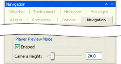Navigation panel
-
 — Slow,
— Slow,
 — Medium speed,
— Fast,
— Super
— Medium speed,
— Fast,
— SuperSpecifies how fast the camera travels in response to appropriate key events (keys Q, W, E, A, S, and D).C
If Caps Lock is on, then the camera speed will be boosted.
Camera speed can also be set to Slow, Medium, Fast and Super Fast by the keyboard shortcuts Ctrl+1, Ctrl+2, Ctrl+3, and Ctrl+4, respectively.
-
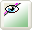 — Normal, — Chunk borders, — Pole markers, 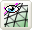 — Wireframe
Toggles between the various chunk visualisation modes.
For details, see Chunk visualisation modes.
-
— Edit in external editor
Opens the current selected item in an external editor.
After saving the item in the editor, WorldEditor will automatically reload it to reveal the changes.
Currently, we only support particle systems (edited in ParticleEditor) and models (edited in ModelEditor).
-
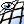 — Draw terrain as wireframe
Draws the terrain mesh as wireframe.
Performs the same function as the General Options panel's, Show list box's, Terrain → Wireframe item (for details on this panel, see General Options panel).
-
 — Hide/show outside
objects
— Hide/show outside
objectsToggles the visibility of all outside objects.
-
 — Object
toolB
— Object
toolBActivates the Object mode — for details, see Object panel. This mode is also activated by pressing 1C.
-
 — Terrain texture
toolB
— Terrain texture
toolBActivates the Terrain texture mode — for details, see Terrain Texturing panel. This mode is also activated by pressing 2C.
-
 — Terrain height
toolB
— Terrain height
toolBActivates the Terrain height mode — for details, see Terrain Height panel. This mode is also activated by pressing 3C.
-
 — Terrain filter
toolB
— Terrain filter
toolBActivates the Terrain filter mode — for details, see Terrain Filtering panel. This mode is also activated by pressing 4C.
-
 — Terrain mesh cut/repair
toolB
— Terrain mesh cut/repair
toolBActivates the Terrain mesh cut/repair mode — for details, see Terrain Mesh Cut/Repair panel. This mode is also activated by pressing 5C.
-
 — Terrain import/ export
toolB
— Terrain import/ export
toolBActivates the Terrain import/export mode — for details, see Terrain Import/Export panel. This mode is also activated by pressing 6C.
-
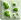 — Project toolB
Activates the Project mode — for details, see Project panel. This mode is also activated by pressing 7C.
A — For details, see Menu items.
B — It also displays/activates the tool's panel. For details on panels, see Panel System.
C — For details, see Keyboard shortcuts.
The status bar displays information about the current world, display settings, and mouse positioning.
A typical status bar is illustrated below:
WorldEditor status bar
The list below describes the pieces of information displayed in the status bar, as they appear:
-
Memory Load (in the example, 11%)
System memory load.
-
Mouse pointer position (in the example, -228.02, 179.70, -12.37)
Position of the mouse pointer, in world coordinates.
-
Chunk identification (in the example, fffdffffo)
ID of the chunk over which the mouse is located.
-
Models in chunk (in the example, m:9)
Number of models in the chunk over which the mouse is located.
-
Primitive groups in chunk (in the example, pg: 9)
Number of primitive groups in chunk over which the mouse is located.
-
Current snap mode (in the example, free)
Displays the current method for snapping objects in the world. This is specified in the Object panel's Object Grid Snaps group box (for details, see Object panel.).
-
Triangles rendered (in the example, 81759 tris.)
Number of triangles currently being rendered in the scene.
-
Frame rate (in the example, 18.9 fps.)
Frame rate used to display the scene.
-
Loaded chunks (in the example, 404 chunks loaded)
Number of loaded chunks.
By default, the Chunk Manager only loads the chunks in the area around the camera, up to the far plane (configured in the General Options panel's Far Plane field — for details, see General Options panel).
-
Dirty chunks (in the example, (52 dirty))
Number of dirty chunks.
WorldEditor provides both context-sensitive gizmos and keyboard-activated gizmos that allow the configuration of world items. They are described in the sections below.
Displayed by default on all world items and represented by red-green-blue axes (or red-green axis if the Object panel's Locking Mode groups box's Terrain option button is selected) ending in a arrow, this gizmo allows the item to be repositioned in the world.
Please note that if the Objects panel's Drag On Select check box is selected, then items can be moved by simply dragging them.
Movement gizmo (Free and Obstacle modes)
Movement gizmo (Terrain mode)
Displayed automatically when a user data object with one or more UDO_REF properties is selected. This gizmo contains two circles, which when dragged and dropped on top of another user data object creates a link between the two, and, if the user data object editor script implements it, two crosses that when dragged allow cloning the user data object.
For details on using this gizmo, see Patrol path editing with User Data Objects.
User data object linking gizmo
Displays automatically when an entity that contains one or more UDO_REF properties is selected. This gizmo is composed of two circles that can be dragged to a user data object to establish link to it, from the entity.
For details on how to configure an entity to support linking to user data objects and how to use this gizmo, see Patrol path editing with User Data Objects.
Entity linking gizmo
Activated by the Shift keyboard shortcut and represented by red-green-blue circles, this gizmo allows the item to be rotated in all directions.
Rotation gizmo
Note
Spot lights have an additional yellow circle that allows the user to change the cone angle property.
Rotation gizmo for spot lights
Activated by the Alt keyboard shortcut and represented by red-green-blue axes ending in a square (for regular scale gizmo) and a white circle (for uniform scale gizmo), this gizmo allows the item to be scaled.
Dragging one of the squares at the end of an axis rescales the item only in that dimension. Dragging the white circle inwards or outwards uniformly shrinks or enlarges the item, respectively.
Scale gizmo
Note
Lights have a different scale gizmo, with a green circle representing the inner radius and a blue circle representing the outer radius.
Spot lights have an additional yellow circle that allows the user to change the cone angle property.
Scale gizmo for lights
Scale gizmo for spot lights
Activated by pressing Shift while the Terrain Texture toolbar buttonA —— is selected or by clicking the Terrain Texturing panel's buttonB, this gizmo
contains the following elements (each updating a different field in the
panel):
-
Projection gizmo (composed of red, green, and blue circles).
-
Red circle — updates the Roll field.
-
Green circle — updates the Pitch field.
-
Blue circle — updates the Yaw field.
-
-
Scale gizmo (composed of red and green cubes and a red- and green-sided rectangle or grid).
-
Red cube — updates the V field.
-
Green cube — updates the U field.
-
A — For details, see Toolbar.
B — For details, see Terrain Texturing panel.
Texture projection/scale gizmo
The list of WorldEditor's keyboard shortcuts can be displayed via the Help → Shortcuts menu item (for details, see Menu items).
The sections below list the WorldEditor's keyboard shortcuts.
-
F1
Displays the WorldEditor Shortcuts page, which can be left by pressing Esc.
-
F4
Cycles through object locking modes:
-
Free
-
Terrain
-
Obstacle
Performs the same function as the Object panel's Locking Mode group boxA.
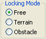Object panel's Locking Mode group box
-
-
Ctrl+F5
Activates the Realtime Profiling console, which can be left by pressing Esc (for details, see Realtime Profiling console).
-
F6
Cycles through the chunk visualisation modes:
-
Normal — same as the 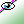 toolbar button.
-
Chunk borders — same as the toolbar button.
-
Pole markers — same as the 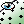 toolbar button.
-
Wireframe — same as the 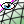 toolbar button.
Performs the same function as the Chunk Visualisation toolbar buttons (for details, see Toolbar).
For details, see Chunk visualisation modes.
-
-
Ctrl+F7
Activates the Debug (Watcher) console, which can be left by pressing Esc (for details, see Debug (Watcher) console).
-
F8
Cycles through coordinate systems:
-
World
-
Local
-
View
Performs the same function as the Object panel's Coordinate System group boxA.
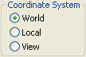Object panel's Coordinate System group box
-
-
F9
-
If Terrain Texture ToolB —— is selected
Recalculates detail objects, such as flora, based on the texture predominant in the terrain.
For more details on flora calculation, see the document Content Creation Manual's lesson Create and Use Flora (the document is accessed by pressing F1 or by selecting the Help → Content Creation menu item — for details, see Menu items).
-
-
F11
Activates the Histogram console, which can be left by pressing Esc (for details on this console, see Histogram console).
A — For details, see Object panel.
B — For details, see Terrain Texturing panel, and Toolbar.
-
Alt
-
If at least one object is selected
-
If the mouse is being dragged (using the left button)
Deselects the items delimited by the area over which the mouse is dragged.
-
Otherwise
While pressed, the key activates the scale gizmos (NOTE: the key does not toggle a scale mode).
The uniform scale gizmo is represented by a circle, and causes the object to have all its dimensions uniformly resized. The regular scale gizmo is represented by the usual red-green-blue axis gizmo, and causes the object to be rescaled only on the selected dimension.
For lights, the scale gizmo for inner radius (represented by a green circle) and outer radius (represented by a blue circle) are activated. For spot lights, the gizmo for the property cone angle (represented by a yellow area inside the gizmo for inner radius) is also activated.
The selected object can then be shrunk or enlarged, up to a maximum size of 100 metres.
The scale gizmos use the Object panel's Coordinate system and Locking Mode group boxes to determine which axis to scale on and whether to snap the objects while scaling (for details, see Object panel).
-
-
If Terrain Texture Tool toolbar buttonC —— is selected
Activates the texture sampler tool (indicated by the
 cursor icon), which samples the dominant
texture of the chunk under the cursor — the Terrain Texturing panel's Active Texture fieldC will be
updated accordingly.
cursor icon), which samples the dominant
texture of the chunk under the cursor — the Terrain Texturing panel's Active Texture fieldC will be
updated accordingly.
-
If Terrain Texture Height toolbar buttonE —— is selected
Activates the height picker tool (indicated by the
 cursor icon), which samples the height
underneath the cursor and assigns it to the Terrain Height panel's Explicit Height field (for details, see
Terrain Height panel).
cursor icon), which samples the height
underneath the cursor and assigns it to the Terrain Height panel's Explicit Height field (for details, see
Terrain Height panel).
-
If Terrain Import/Export toolbar buttonD —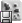— is selected
Activates the height picker tool (indicated by the
cursor icon), which samples the maximum
height of the region selected by dragging the mouse and assigns
it to the Terrain Import/Export
panel's Maximum Height field
(for details, see Terrain Import/Export panel).
-
If Debug (Watcher) consoleB is active
-
If [0-9] key in the alphanumeric keypad is pressed:
Selects item 40+[0-9], or 50+[0-9] (if Shift is pressed).
-
-
-
Alt+Ctrl
-
If Terrain Texture Tool toolbar buttonC —— is selected
Activates the texture/opacity sampler tool (indicated by the
 cursor icon), which samples the dominant
texture of the chunk under the cursor and its opacity — the
Terrain Texturing panel's
Active Texture and Opacity fieldsC will be
updated accordingly.
cursor icon), which samples the dominant
texture of the chunk under the cursor and its opacity — the
Terrain Texturing panel's
Active Texture and Opacity fieldsC will be
updated accordingly.
-
-
Alt+Shift
-
If Terrain Texture Tool toolbar buttonC —— is selected
Activates the texture projection tool (indicated by the
 cursor icon — a red- and green-sided
square indicates the clicked area), which adjusts the Terrain Texturing panel's Projection fieldsC to the
values of that of the terrain under the cursor.
cursor icon — a red- and green-sided
square indicates the clicked area), which adjusts the Terrain Texturing panel's Projection fieldsC to the
values of that of the terrain under the cursor.
-
If Debug (Watcher) consoleB is active
-
If [0-9] key in the alphanumeric keypad is pressed:
Selects item 50+[0-9].
-
-
-
Alt+Page Down
-
If Debug (Watcher) consoleB is active
If the watcher is in Edit mode, then decreases the watcher's value by 1,000.
-
-
Alt+Page Up
-
If Debug (Watcher) consoleB is active
If the watcher is in Edit mode, then increases the watcher's value by 1,000.
-
-
Ctrl
-
If at least one object is selected
While pressed, the key enables the selection of multiple objects (NOTE: the key does not toggle an additive selection mode).
-
If used in conjunction with the mouse scroll wheel
Rotates the selected shells according to the snapped portals.
-
-
If Debug (Watcher) consoleB is active
-
If [0-9] key in the alphanumeric keypad is pressed:
Selects item 20+[0-9], or 30+[0-9] (if Shift is pressed).
-
-
If Terrain Height Tool toolbar buttonE —— is selected
Note: This is only valid if the left Ctrl key is pressed.
Activates the explicit height brush (indicated by a green square), which immediately sets the terrain height to the value specified in the Explicit Height field (if the Absolute option button is selected), or immediately increases the terrain height by the value specified in the Explicit Height field (if the Relative option button is selected).
For details on absolute and relative explicit height modes, see Terrain Height panel.
-
If Terrain Import/Export toolbar buttonD —— is selected
Activates the height picker tool (indicated by the
cursor icon), which samples the minimum
height of the region selected by dragging the mouse and assigns
it to the Terrain Import/Export
panel's Minimum Height
field.
-
-
Ctrl+Alt
See the entry Alt+Ctrl in this list.
-
Ctrl+Shift
-
If Debug (Watcher) consoleB is active
-
If [0-9] key in the alphanumeric keypad is pressed:
Selects item 30+[0-9].
-
-
-
Ctrl+Page Down
-
If Debug (Watcher) consoleB is active
If the watcher is in Edit mode, then decreases the watcher's value by 100.
-
-
Ctrl+Page Up
-
If Debug (Watcher) consoleB is active
If the watcher is in Edit mode, then increases the watcher's value by 100.
-
-
Shift
-
If at least one object is selected
While pressed, the key activates the rotation gizmo (NOTE: the key does not toggle a rotation mode).
The rotation gizmo uses the Object panel's Coordinate system and Locking Mode group boxes to determine which axis to rotate around and whether to snap the objects while rotating (for details, see Object panel).
-
If Terrain Texture Tool toolbar buttonC —— is selected
Activates the texture projection/scale gizmo (for details, see Terrain Texturing gizmos). The gizmo can also be activated by clicking the button on top of the Terrain Texturing panelC.
-
If Terrain Import/Export toolbar buttonD —— is selected
Locks the selected region being dragged to chunk boundaries.
-
If Debug (Watcher) consoleB is active
-
If [0-9] key in the alphanumeric keypad is pressed:
Selects item 10+[0-9], 30+[0-9] (if Ctrl is pressed), or 50+[0-9] (if Alt is pressed).
-
-
-
Shift+Enter
-
If Debug (Watcher) consoleB is active and watcher is in edit mode
Displays the watcher modification history.
-
-
Shift+Alt
See the entry Alt+Shift in this list.
-
Shift+Page Down
-
If Debug (Watcher) consoleB is active
If the watcher is in Edit mode, then decreases the watcher's value by 100.
-
-
Shift+Page Up
-
If Debug (Watcher) consoleB is active
If the watcher is in Edit mode, then increases the watcher's value by 100.
-
A — For details, see Toolbar.
B — Activated by F7 (for details on the Python console, see Python console).
C — For details, see Terrain Texturing panel.
D — For details, see Terrain Import/Export panel.
E — For details, see Terrain Height panel.
-
Backspace
-
If Debug (Watcher) consoleC is active
Returns the list to the previous branch of the watcher tree.
-
-
Caps Lock
-
ON
Increases the current camera speed. It accelerates the camera movement, which speed is set by keyboard shortcuts (Ctrl+1, Ctrl+2, Ctrl+3, and Ctrl+4), or by the Camera Speed toolbar buttons (,
 ,
, , and
, and  ).
).
-
OFF
Restores camera to the speed set by keyboard shortcuts or by the Camera Speed toolbar buttonsA.
-
-
Delete
Deletes the selected objects.
-
Enter
-
If Object Tool toolbar buttonB —— is selected
Places the selected object under the mouse cursor.
-
If Python consoleE
Executes the Python command, or exits the console if no command was specified.
-
If Realtime Profiling consoleD is active
Expands or collapses the profiling element currently selected — elements with children are indicated by an ellipsis (…) next to it.
-
If Debug (Watcher) consoleC is active
-
If the selected node is not a leaf
Navigates one level down in the watcher tree.
-
If the selected node is a leaf
Opens the selected watcher for editing, or accepts the typed value if it is already in Edit mode.
-
If watcher is in Editor mode and Shift is pressed
Displays the watcher modification history.
-
-
-
Esc
Deselects the selected objects.
-
If the File → Save or File → Process Data menu item has been selected, and is still saving/processing
Cancels the operation (for details, see Menu items).
-
If any console is active
Exits the console.
NOTE: The different modes and consoles are activated in the following way:
-
Help mode — F1
-
Realtime profiling console — F5 (for details, see Realtime Profiling console)
-
Debug (Watchers) console — F7 (for details, see Debug (Watcher) console)
-
Histogram console — F11 (for details, see Histogram console)
-
Python console — Ctrl+P (for details, see Python console)
-
-
If Debug (Watcher) consoleC is active
-
If the watcher is in Edit mode
Leaves Edit mode.
-
If the watcher is not in Edit mode
Exits the console.
-
-
-
Home
-
If Realtime Profiling consoleD is active
Scrolls the list to display the first page.
-
If Debug (Watcher) consoleC is active
Returns the list to the root of the watcher tree.
-
-
Page Down
-
If Realtime Profiling consoleD is active
Moves the selection to the next element in the list.
Performs the same function as the ] (square right bracket) keyboard shortcut.
-
If Debug (Watcher) consoleC is active
-
If the watcher is not in Edit mode
Moves the selection to the next item in the list.
-
If the watcher is in Edit mode
Decreases the watcher's value by 1, 10 (if Shift is pressed), 100 (if Ctrl is pressed), or 1,000 (if Alt is pressed).
-
-
-
Page Up
-
If Realtime Profiling consoleD is active
Moves the selection to the previous element in the list.
Performs the same function as the [ (square left bracket) keyboard shortcut.
-
If Debug (Watcher) consoleC is active
-
If the watcher is not in Edit mode
Moves the selection to the previous item in the list.
-
If the watcher is in Edit mode
Increases the watcher's value by 1, 10 (if Shift is pressed), 100 (if Ctrl is pressed), or 1,000 (if Alt is pressed).
-
-
A — For details, see Toolbar.
B — For details, see Object panel, and Toolbar.
C — Activated by F7 (for details, see Debug (Watcher) console).
D — Activated by F5 (for details, see Realtime Profiling console).
E — Activated by Ctrl+P (for details, see Python console).
-
Numpad + (Plus sign)
-
If Realtime Profiling consoleA is active
Scrolls the screen one line down.
-
If Debug (Watcher) consoleB is active
Scrolls the watcher list down.
-
-
, (Comma)
-
If Terrain Filter Tool toolbar buttonC —— is selected
Selects the previous item in the Filters list box.
-
-
Numpad - (Minus sign)
-
If Realtime Profiling consoleA is active
Scrolls the screen one line up.
-
If Debug (Watcher) consoleB is active
Scrolls the watcher list up.
-
-
. (Period)
-
If Terrain Filter Tool toolbar buttonC —— is selected
Selects the next item in the Filters list box.
-
-
[ (Left square bracket)
-
If Terrain Texture ToolD ——, Terrain Height ToolE ——, Terrain Filter ToolC ——, or Terrain Mesh ToolF —— toolbar button is selected
Decreases the brush size.G
-
If Realtime Profiling consoleA is active
Moves the selection to the profiling element in the list.
Performs the same function as the Page Up keyboard shortcut.I
-
-
] (Right square bracket)
-
If Terrain Texture ToolD ——, Terrain Height ToolE ——, Terrain Filter ToolC ——, or Terrain Mesh ToolF —— toolbar button is selected
Increases the brush size.G
-
If Realtime Profiling consoleA is active
Moves the selection to the next element in the list.
Performs the same function as the Page Down keyboard shortcutI.
-
-
{ (Left curly bracket)
-
If Terrain Texture ToolD ——, Terrain Height ToolE ——, Terrain Filter ToolC ——, or Terrain Mesh ToolF —— toolbar button is selected
Decreases the brush strength.G
-
-
} (Right curly bracket)
-
If Terrain Texture ToolD ——, Terrain Height ToolE ——, Terrain Filter ToolC ——, or Terrain Mesh ToolF —— toolbar button is selected
Increases the brush strength.G
-
-
~ (Tilde)
Toggles the player walkthrough mode.
This mode can also be toggled by the Player Preview Mode toolbar buttonH —
 —, or by the Navigation panel's Player Preview Mode group box's Enabled check
box.I
—, or by the Navigation panel's Player Preview Mode group box's Enabled check
box.I
A — Activated by F5 (for details, see Realtime Profiling console).
B — Activated by F7 (for details, see Debug (Watcher) console).
C — For details, see Terrain Filtering panel, and Toolbar.
D — For details, see Terrain Texturing panel, and Toolbar.
E — For details, see Terrain Height panel, and Toolbar.
F — For details, see Terrain Mesh Cut/Repair panel, and Toolbar.
G — The mouse pointer must be located somewhere in the viewport for the shortcut to have effect.
H — For details, see Toolbar.
I — For details, see Navigation panel.
-
Alphanumeric keypad
-
1
Activates the Object mode — for details, see Object panel. This mode is also activated by the
toolbar
buttonD.
-
2
Activates the Terrain texture mode — for details, see Terrain Texturing panel. This mode is also activated by the
toolbar
buttonD.
-
3
Activates the Terrain height mode — for details, see Terrain Height panel. This mode is also activated by the
toolbar
buttonD.
-
4
Activates the Terrain filter mode — for details, see Terrain Filtering panel. This mode is also activated by the
toolbar
buttonD.
-
5
Activates the Terrain mesh cut/repair mode — for details, see Terrain Mesh Cut/Repair panel. This mode is also activated by the
toolbar
buttonD.
-
6
Activates the Terrain import/export mode — for details, see Terrain Import/Export panel. This mode is also activated by the
toolbar
buttonD.
-
7
Activates the Project mode — for details, see Project panel. This mode is also activated by the toolbar buttonD.
-
If Debug (Watcher) consoleB is active
Depending on the key modifier pressed (if any), selects the following item (n is the pressed key):
-
n -
10+
n(if Shift is pressed) -
20+
n(if Ctrl is pressed) -
30+
n(if Ctrl+Shift is pressed) -
40+
n(if Alt is pressed) -
50+
n(if Alt+Shift is pressed)
-
-
-
Numeric keypad
-
0
-
If Histogram consoleA is active
Toggles the graphing of luminance.
-
-
1
-
If Histogram consoleA is active
Toggles the graphing of the red component in the RGB histogram.
-
-
2
-
If Histogram consoleA is active
Toggles the graphing of the green component in the RGB histogram.
-
-
3
-
If Histogram consoleA is active
Toggles the graphing of the blue component in the RGB histogram.
-
-
4
-
If Histogram consoleA is active
Toggles the rendering of the scene background on the histograms.
-
-
5
-
If Histogram consoleA is active
Decreases the vertical range ratio of the Luminance and RGB histograms.
-
-
6
-
If Histogram consoleA is active
Increases the vertical range ratio of the Luminance and RGB histograms.
-
-
A — Activated by F11 (for details, see Histogram console).
B — Activated by F7 (for details, see Debug (Watcher) console).
C — For details, see Terrain Texturing panel, and Toolbar.
D — For details, see Toolbar.
-
A
Moves the camera to the left.
-
B
Toggles the drawing of object's BSPs.
This value can also be set by the General Options panel's, Show list box's, Scenery → BSP itemA.
-
C
Clones selected objects.
-
D
Moves the camera to the right.
-
E
Moves the camera upwards.
-
If Navigation panel is active
-
If the Player Preview Mode group box's Enabled check box is selected
Increases the value of the Player Preview Mode group box's Camera Height field.
-
-
-
G
-
If Object panelC is active
Toggles the snapping of objects to the grid specified in the Object panel.
This value is also set by the Object panel's Object Grid Snaps group box's Enabled check box.
-
If Realtime Profiling consoleB is active
Draws a graph for the profiling element currently selected.
More than one element can be graphed at any one time. Each one will be assigned a different colour, which will be used to display the element's name, and draw the graph itself.
-
-
J
Grants control to the joystick
-
K
Grants control to the keyboard.
-
M
Toggles the drag-on-select mode.
This value is also set by the Object panel's Drag On Select check boxC.
-
Q
Moves the camera downwards.
-
If the Navigation panelD is active
-
If the Player Preview Mode group box's Enabled check box is selected
Decreases the value of the Player Preview Mode group box's Camera Height field.
-
-
-
S
Moves the camera backwards.
-
V
-
If a shell is selected
While pressed, causes the mouse middle button click to copy selected shell, and links both by a matching portal.
Note: V must be pressed before and during the middle mouse button click.
-
-
W
Moves the camera forward.
A — For details, see General Options panel.
B — Activated by F5 (for details, see Realtime Profiling console).
C — For details, see Object panel.
D — For details, see Navigation panel.
-
Alt+F4
Accesses the File → Exit menu item.C
-
Alt+Page Down
-
If Debug (Watcher) consoleB is active and watcher is in edit mode
Decreases the watcher's value by 1,000.
-
-
Alt+Page Up
-
If Debug (Watcher) consoleB is active and watcher is in edit mode
Increases the watcher's value by 1,000.
-
-
Alt+[0-9]
-
If Debug (Watcher) consoleB is active and used alphanumeric keypad
Selects list item 4[0-9].
-
-
Alt+Ctrl
-
If Terrain Texture Tool toolbar buttonA —— is selected
Activates the texture/opacity sampler tool (indicated by the
cursor icon), which samples the dominant
texture of the chunk under the cursor and its opacity — the
Terrain Texturing panel's
Active Texture and Opacity fieldsC will be
updated accordingly.
-
-
Alt+Ctrl+S
Accesses the File → Process Data menu item.C
-
Alt+Shift
-
If Terrain Texture Tool toolbar buttonA —— is selected
Activates the texture projection tool (indicated by the
cursor icon — a red- and green-sided
square indicates the clicked area), which adjusts the Terrain Texturing panel's Projection fieldsC to that of
the terrain under the cursor.
-
-
Alt+Shift+[0-9]
-
If Debug (Watcher) consoleB is active and used alphanumeric keypad
Selects list item 5[0-9].
-
-
Ctrl+Alt
See the entry Alt+Ctrl in this list.
-
Ctrl+Alt+S
See the entry Alt+Ctrl+S in this list.
-
Ctrl+Page Down
-
If Debug (Watcher) consoleB is active and watcher is in edit mode
Decreases the watcher's value by 100.
-
-
Ctrl+Page Up
-
If Debug (Watcher) consoleB is active and watcher is in edit mode
Increases the watcher's value by 100.
-
-
Ctrl+[0-9]
Ctrl+1 turns the Slow Camera toolbar buttonA —— on.
Ctrl+2 turns the Medium Speed Camera toolbar buttonA —
— on.
Ctrl+3 turns the Fast Camera toolbar buttonA —
— on.
Ctrl+4 turn the Super Fast Camera toolbar buttonA —
— on.
-
If Debug (Watcher) consoleB is active and used alphanumeric keypad
Selects item 2[0-9].
-
-
Ctrl+Shift+[0-9]
-
If Debug (Watcher) consoleB is active and used alphanumeric keypad
Selects item 3[0-9].
-
-
Ctrl+A
Accesses the Edit → Select All menu item.C
-
Ctrl+B
Accesses the Edit → Save Selection As Prefab menu item.C
-
Ctrl+D
Accesses the Edit → Deselect All menu item.C
-
Ctrl+H
Accesses the View → Show Panels menu item.C
-
Ctrl+I
Cycles through the available camera speeds.
This value can also be set by the Camera Speed group of toolbar buttons —
,,,.
-
Ctrl+K
Accesses the File → Reload All Chunks menu item.C
-
Ctrl+P
Activates the Python console, which can be left by pressing Esc. For details, see Python console.
-
Ctrl+R
Accesses the File → Reload All Textures menu item.C
-
Ctrl+S
Accesses the File → Save menu item.C
-
Ctrl+T
Accesses the Edit → Save Shell As Template menu item.C
-
Ctrl+Y
Accesses the Edit → Redo menu item.C
-
Ctrl+Z
Accesses the Edit → Undo menu item.C
Note: The mouse cursor must be over the viewport for shortcut to be enabled.
-
Shift+Alt
See the entry Alt+Shift in this list.
-
Shift+Alt+[0-9]
See the entry Alt+Shift+[0-9] in this list.
-
Shift+Ctrl+[0-9]
See the entry Ctrl+Shift+[0-9] in this list.
-
Shift+Enter
-
If Debug (Watcher) consoleB is active and watcher is in edit mode
Displays the watcher modification history.
-
-
Shift+Page Down
-
If Debug (Watcher) consoleB is active and watcher is in edit mode
Decreases the watcher's value by 1.
-
-
Shift+Page Up
-
If Debug (Watcher) consoleB is active and watcher is in edit mode
Increases the watcher's value by 1.
-
-
Shift+[
-
If Terrain Texture Tool toolbar buttonD —— is selected
Decreases the brush strength.
-
-
Shift+]
-
If Terrain Texture Tool toolbar buttonD —— is selected
Increases the brush strength.
-
-
Shift+F4
Captures a copy of the current scene to bigworld/tools/worldeditor/shot
<nnnn>.bmp, where<nnnn>is a sequential number.For details, see the document Client Programming Guide's section 3D Engine (Moo) → Taking Screenshots.
A — For details, see Toolbar.
B — Activated by F7 (for details, see Debug (Watcher) console).
C — For details, see Menu items.
D — For details, see Terrain Texturing panel, and Toolbar.
The list below describes the WorldEditor's mouse controls:
-
Left button click
-
If Object Tool toolbar buttonB —— is selected
If button was clicked on a selectable object, then select the object.
Selected objects are indicated by white corners on their bounding boxes. Selectable objects are indicated by rendering their bounding boxes in green when the mouse hovers over them — the objects that can be currently selected are specified by the Object panel's Selection Filter drop-down list boxB. Objects that could not be loaded are indicated by a red box, and with a message in the BigWorld Messages panelJ.
-
If Terrain Texture Tool toolbar buttonC —— is selected
-
If Alt is pressed
Samples the dominant texture of the chunk under the cursor — the Terrain Texturing panel's Active Texture fieldC will be updated accordingly.
AltH activates the texture sampler tool (indicated by the
cursor icon).
-
If Alt+CtrlH is pressed
Samples the dominant texture of the chunk under the cursor and its opacity — the Terrain Texturing panel's Active Texture and Opacity fieldsC will be updated accordingly.
Alt+Ctrl activates the texture/opacity sampler tool (indicated by the
cursor icon).
-
If Alt+ShiftH is pressed
Adjusts the Terrain Texturing panel's Projection fieldsC to that of the terrain under the cursor.
Alt+Shift activates the texture projection tool (indicated by the
cursor icon — a red- and green-sided
square indicates the clicked area).
-
-
If Terrain Height Tool toolbar buttonD —— is selected
-
If AltH is pressed
Samples the height of the terrain under the cursor
Alt activates the height picker tool (indicated by the
cursor icon), which samples the height
underneath the cursor and assigns it to the Terrain Height panel's Explicit Height
fieldD.
-
-
-
Left button drag
-
If Object Tool toolbar buttonB —— is selected
-
If button was clicked on a selectable object
Selected objects are indicated by white corners on their bounding boxes. Selectable objects are indicated by rendering their bounding boxes in green when the mouse hovers over them — the objects that can be currently selected are specified by the Object panel's Selection Filter drop-down list boxB. Objects that could not be loaded are indicated by a red box, and with a message in the BigWorld Messages panelJ.
-
If Object Tool panel's Drag On Select check box is selected
Draws a rectangle inside which all objects matching the current selection in the Selection Filter drop-down list box will be selected.
-
If Object Tool panel's Drag On Select check box is cleared
Moves the selected objects in the direction of the drag. Dragging the mouse up and down will move the objects upwards and downwards, respectively.
-
-
If button was NOT clicked on a selectable object
Draws a rectangle inside which all objects with a type that matches the Object panel's Selection Filter drop-down will be selected.
NOTE: The mouse cursor icon will vary according to selected Locking Mode. It will be a pink diamond if Obstacle is selected, or a yellow cross otherwise.
-
-
If Terrain Texture Tool toolbar buttonC —— is selected
Draws the Active Texture into the terrain, according to the settings specified in the Terrain Texturing panel.
-
If Terrain Height Tool toolbar buttonD —— is selected
Gradually increases the terrain height.
-
If left CtrlH is pressed
Activates the explicit height brush (indicated by a green square), which immediately sets the terrain height to the value specified in the Explicit Height field (if the Absolute option button is selected), or immediately increases the terrain height by the value specified in the Explicit Height field (if the Relative option button is selected).
For details on absolute and relative explicit height modes, see Terrain Height panel.
-
-
If Terrain Filter Tool toolbar buttonE —— is selected
Gradually applies the selected filter onto the terrain.
-
If Terrain Mesh Tool toolbar buttonF —— is selected
Cuts or repairs the terrain, according to the settings in the panel.
-
If Terrain Import/Export toolbar buttonI —— is selected
Moves or resizes the selected area, depending on whether the mouse is clicked inside the selected area (in which case the move mode is activated) or in the blue border of the selected area (in which case the resize mode is activated).
-
If Alt is pressed
Activates the height picker tool (indicated by the
cursor icon), which samples the maximum
height of the region selected by dragging the mouse and
assigns it to the Terrain
Import/Export panel's Maximum
Height field.
-
If Ctrl is pressed
Activates the height picker tool (indicated by the
cursor icon), which samples the minimum
height of the region selected by dragging the mouse and
assigns it to the Terrain
Import/Export panel's Minimum
Height field.
-
-
If Project Tool toolbar buttonG —
 — is
selected
— is
selectedSelects the area to be locked, have changes committed, or have changes discarded (depending on which button is clicked after selection).
-
-
Right button click
-
Over a model, shell, or particle
Opens a context menu.
-
If Terrain Texture Tool toolbar buttonA —— is selected
Displays the Terrain Texturing panel'sC context menu (for details, see Terrain Texturing viewport context menu).
-
-
Right button drag
-
If Orthographic View toolbar buttonA —
 — is
enabled
— is
enabledMoves camera in the direction of the drag.
-
If Orthographic View toolbar buttonA —
— is
disabledRotates camera in the direction of the drag.
-
If Terrain Import/Export toolbar buttonI —— is selected
Pans the map according to the drag movement.
-
If Project Tool toolbar buttonG —
— is
selectedPans the map according to the drag movement.
-
-
Middle button click
-
If a shell is selected
Links the selected shell to the clicked shell by a matching portal.
-
If V is pressedH
Makes a copy of the selected shell, and links both by a matching portal.
V must be pressed before and during the middle button click.
-
-
If Terrain Texture Tool toolbar buttonC —— is selected
Picks texture assigned to current alpha channel from the chunk under cursor.
-
If Terrain Height Tool toolbar buttonD —— is selected
Gradually decreases terrain height.
-
If Terrain Import/Export toolbar buttonI —— is selected
Displays the clicked area in the viewport — the top view of the world is abandoned.
-
If Project Tool toolbar buttonG —
— is
selectedDisplays the clicked area in the viewport — the top view of the world is abandoned.
-
-
Scroll wheel rotate
Moves the camera forward and backwards.
-
If Shift is pressed and at least one object is selected
Rotates the selected object(s).
-
If Space key is pressed
Increases or decreases the camera speed, depending on the direction of the wheel rotation.
Performs the same functions as the ,
,, and toolbar
buttons.A -
If Object Tool toolbar buttonB —— is selected
-
If Ctrl is pressed and a shell is selected
Rotates the shell according to the snapped portal.
-
If Shift is pressed:
Rotates the selected objects by 15 degrees.
-
If Object Grid Snap's Enabled field is selected
Rotates the selected objects by the number of degrees specified in the Angle field.
If only one object is selected, then it will be rotated around itself. If more than one object is selected, then they will be rotated around their common centre.
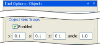Object panel's Object Grid Snaps group box
If only one object is selected, then it will be rotated around itself. If more than one object is selected, then they will be rotated around their common centre.
-
-
-
If Terrain Import/Export toolbar buttonI —— is selected
Zooms the world map in and out, according to the direction of scroll.
-
If Project Tool toolbar buttonG —
— is
selectedZooms the world map in and out, according to the direction of scroll.
-
A — For details, see Toolbar.
B — For details, see Object panel.
C — For details, see Terrain Texturing panel.
D — For details, see Terrain Height panel.
E — For details, see Terrain Filtering panel.
F — For details, see Terrain Mesh Cut/Repair panel.
G — For details, see Project panel.
H — For details, see Keyboard shortcuts.
I — For details, see Terrain Import/Export panel.
J — For details, see BigWorld Messages panel.
Accessed via the File → Open Space menu item (for details, see Menu items), this dialog box allows you to choose the space to load in WorldEditor.
Browse For Folder dialog box
The list below describes the fields on this dialog box:
-
Folder list
Lists of sub-folders available in the resources folder.
Automatically invoked by WorldEditor when user chooses to perform an action that would otherwise discard unsaved changes (such as closing the application or changing space), it allows the user to specify how to handle these changes before proceeding.
The following actions will have WorldEditor invoke this dialog box in case there are unsaved changes:
-
Creating a new space (via the File → New Space menu item)
-
Opening an existing space (via the File → Open Space menu item)
-
Reloading all chunks in current space (via the File → Reload All Chunks menu item or the Ctrl+K keyboard shortcut)
-
Closing the application (via the File → Exit menu item, the window button, or any keyboard shortcut)
Changed Files dialog box
The list below describes the fields on this dialog box:
-
Save
Saves changes to the world — without calculating shadow, lighting, thumbnail, or ecotype information —, before proceeding with operation.
-
Process then save
Recalculates shadow, lighting, thumbnail, or ecotype information, then saves changes to the world, before proceeding with operation.
-
Change space without save
Proceeds with operation without saving changes.
-
Cancel
Closes the dialog box without performing any action.
Accessed via the File → Convert Space menu item (for details, see Menu items), this dialog box allows you to convert the current simple terrain space to one with terrain advanced features.
Note
A Simple Terrain is one created with BigWorld Technology 1.8 or earlier, or one created by selecting the File → New Space menu item, then clearing the New Space dialog box's Use Simple Terrain check box (for details, see New Space dialog box).
Simple Terrain has the following characteristics/limitations:
-
Fixed resolution of 25x25 height poles.
-
Only up to 4 texture layers.
-
No texture LOD.
Convert Space dialog box
The fields in this dialog box have the same description as the New Space dialog box's Space Terrain Creation Settings group box (for details, see New Space dialog box).
-
Convert
Converts the current space to one with terrain advanced features specified in the dialog box.
For details on the converted files, see the document Client Programming Guide's section Chunks → Implementation files.
-
Cancel
Closes the dialog box without performing any action.
Accessed via the File → New Space menu item (for details, see Menu items), this dialog box allows you to create a new — blank — space according to the settings specified in it.
New Space dialog box
The list below describes the fields on this dialog box:
-
Space name
Name of the space to create.
-
Space path
Parent folder of the space to create. The Browse button (
 ) opens the New Space
Folder dialog box (for details, see New Space Folder dialog box).
) opens the New Space
Folder dialog box (for details, see New Space Folder dialog box).
-
Space dimensions
-
Width, Height
Number of chunks in the space, in the east/west and north/south direction, respectively.
-
-
Space terrain creation settings
-
Use simple terrain
Determines whether to use terrain advanced features in the creation of the new space.
If this check box is cleared, then the remaining fields in the group box are disabled and the terrain will have the following characteristics:
-
Fixed resolution of 25x25 height poles.
-
Only up to 4 texture layers.
-
No texture LOD.
-
-
Height map resolution
Resolution of the height map per chunk.
Higher values in this field result in a more detailed terrain geometry, but also in higher rendering times.
Recommended value is 128.
-
Normal map resolution
Resolution of the normal map per chunk — this map contains information about the slope of the terrain, and is used for illumination.
-
Hole map resolution
Resolution of the holes map per chunk — this map contains information about the holes in the terrain, which are needed to transition between the terrain and an indoor chunk (shell).
-
Shadow map resolution
Resolution of the terrain shadow map per chunk — this map contains shadow information originated from objects (e.g., a house, which casts a shadow in the terrain) and from the terrain itself (e.g., a hill in the terrain, which casts a shadow onto itself).
Higher values in this field result in a longer time for shadow generation for the terrain.
Recommended value is 32.
-
Texture blend map resolution
Resolution of the texture layers blend maps per chunk — this map contains a blend information similar to an opacity/alpha channel on how to blend the textures onto the terrain.
Higher values in this fields allow for a more detailed terrain texturing, but also result in higher memory use.
Recommended value is 128.
-
-
Default terrain texture
Texture map to initially use for the terrain in the new space.
-
Create
Creates space under the folder specified in Space Path.
For details on the created files, see the document Client Programming Guide's section Chunks → Implementation files.
-
Cancel
Closes the dialog box without performing any action.
Accessed via the Browser button () in the New
Space dialog box's Space
Folder field (for details, see New Space dialog box), this dialog box allows you to
create a folder for the new space, or choose an existing one.
New Space Folder dialog box
The list below describes the fields on this dialog box:
-
Folder list
Lists the sub-folders available in the resources folder.
-
Make new folder
Creates a new folder under the one currently selected in Folder List.
Invoked by the Terrain Texturing panel's Noise group box's Noise Setup button (for details, see Terrain Texturing panel), this dialog box lets you configure the noise mask to be used in that panel.
Noise Setup dialog box
The list below describes the fields on this dialog box:
-
Octaves
-
Wavelength
Length (in metres) of the respective octave.
-
Weight
Contribution (in percentage) of the respective octave in the noise mask.
-
Seed
Seed to generate the noise.
-
-
Strength and saturation
-
Min Saturation
Minimum value that the alpha value must have to be used in the noise mask.
-
Max Saturation
Maximum value that the alpha value might have to be used in the noise mask.
-
Min Strength
Minimum value that the output alpha value will have — all alpha values will be recalculated to fit between Min Strength and Max Strength.
-
Min Strength
Maximum value that the output alpha value will have — all alpha values will be recalculated to fit between Min Strength and Max Strength.
-
Invoked by the Object panel's Placement Method drop-down list box (for details, see Object panel) when the value (Edit Presets…) is selected, this dialog box allows you to create a group of settings that determine the values between which to randomise the orientation and size during the placement of objects.
This allows the creation of worlds with greater variety, but with less work by the builder.
Placement Controls dialog box
The list below describes the fields on this dialog box:
-
Placement presets
Name of current preset.
-
Opens the Placement Preset Name dialog box, where the user can specify the name of a new preset.
Once the name is specified, all rotation and scale fields are set to their default values.
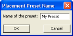Placement Preset Name dialog box
-
Opens the Placement Controls dialog box, where the user is prompted to confirm the deletion.
After deleting the preset, Placement Presets drop-down list box is set to (Normal Placement).
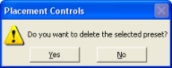Placement Controls deletion confirmation dialog box
-
Opens the Placement Preset Name dialog box, where the user can change the name of the preset.
-
Random rotation
Group of fields determining the range of values within which the object's rotation (yaw, pitch, and roll) should be randomised.
-
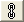
Links the Y, P, and R values to each other, for both Min and Max.
This means that when Min or Max value of a rotation component is changed, the others are automatically changed as well.
-
Y
Min and Max values for yaw randomisation during object placement.
-
P
Min and Max values for pitch randomisation during object placement.
-
R
Min and Max values for roll randomisation during object placement.
-
Resets Min and Max values of the respective rotation component to its default value.
-
-
Random scale
Group of fields determining the range of values within which the object's scale (in x-, y-, and z-axes) should be randomised.
-
Apply scale proportionally on all axes
Randomises object's scale by the same amount in all axes, effectively keeping its proportion.
The toggle button is automatically selected when this option is selected, and cannot be cleared.
-
Links the X, Y and Z values to each other, for both Min and Max.
This means that when Min or Max value of a scale component is changed, the others are automatically changed as well.
-
X
Min and Max values for scale randomisation along the x-axis.
-
Y
Min and Max values for scale randomisation along the y-axis.
-
Z
Min and Max values for scale randomisation along the z-axis.
-
Resets Min and Max values of the respective scale component to its default value.
-
Invoked by the Terrain Texturing panel's Imported group box's Browse button's Open dialog box (for details, see Terrain Texturing panel), this dialog box lets you select the file to be used as import mask in that panel.
RAW Terrain Import dialog box
The list below describes the fields on this dialog box:
-
File
Path and name of the RAW file selected in the previous dialog box.
-
Size
Dimensions of the imported file — this is not necessarily the original size of the file, but rather the size that you want it to have as a mask.
-
Little endian (Intel format)
Determines whether the original mask was saved using the Intel format.
-
Big endian (Motorola format)
Determines whether the original mask was saved using the Motorola format.
Accessed via the File → Resize Terrain Texture Blends menu item (for details, see Menu items), this dialog box allows you to change the resolution of the texture layers blend map — this map contains a blend information similar to an opacity/alpha channel on how to blend the textures onto the terrain.
Resize Terrain Blends dialog box
The fields in this dialog box have the same description as the New Space dialog box's Space Terrain Creation Settings group box (for details, see New Space dialog box).
-
New texture blend map resolution
New resolution of the texture layers blend map.
Higher values in this fields allow for a more detailed terrain texturing, but also result in higher memory use.
Recommended value is 128.
-
Resize
Resizes the current texture layers blend map to the specified resolution.
-
Cancel
Closes the dialog box without performing any action.
Accessed by the button in various sliders, this dialog box allows you to specify the minimum and maximum values for the slider that invoked it.
Set Slider Limits dialog box
Accessed via the Help → Shortcuts menu item (for details, see Menu items), the WorldEditor Shortcuts dialog box displays a list of shortcuts available on WorldEditor. For details on the complete list, see Keyboard shortcuts.

WorldEditor Shortcuts dialog box
BigWorld offers different ways to visualise the chunks in the scene, so that the world builder can choose the one most suitable for the task at hand.
The visualisation modes are switched by pressing F6 (for details, see Function keys), and are described below:
-
Normal
Displays the terrain as it will be rendered in the scene — no overlay is applied on the interface.
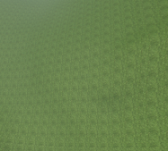Normal mode
-
Chunk borders
Overlays a continuous white line around the border of the chunk over which the mouse is positioned.
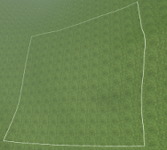Chunk Borders mode
-
Pole markers
Divides the chunk over which the mouse is, and overlays pole markers icons on the corner of each one.
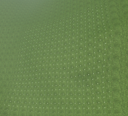Pole Markers mode
-
Wireframe
Divides the chunk over which the mouse is, and overlays the wireframe grid indicator over each one.
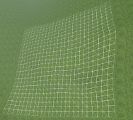Wireframe mode
Assets used to populate the world are accessed via the Asset Browser. For details, see Asset Browser panel.
Note
Selected objects are indicated by white corners on their bounding boxes.
Selectable object s are indicated by rendering their bounding boxes in green when the mouse hovers over them — the objects that can be currently selected are specified by the Object panel's Selection Filter drop-down list box (for details, see Object panel).
Objects that could not be loaded are indicated by a red box and a message in the BigWorld Messages panel — to view this kind of message, the BigWorld Messages panel's Assets check box must be selected (for details, see BigWorld Messages panel).
This node gives access to all exported .model files. Models refer to the basic props that can be placed in the world.
Note
For more information on models, see:
-
document Client Programming Guide's section Models.
-
document Content Creation Manual's lessons (the document is accessed by pressing F1 or by selecting the Help → Content Creation menu item — for details, see Menu items):
-
Modify a Model in ModelEditor
-
Add Models to the World
-
Best Practices → Animation tree — Using LOD models to share animations
-
For details on .model files' grammar, see the document File Grammar Guide's section .model.
Shells refer to the indoor chunks containing portals that you have exported to the shells folder.
A new indoor chunk is created by selecting a shell and placing it in the world. The new indoor chunk will contain all portals referenced in the shell.
Note
For more information on shells, see :
-
document Content Creation Manual's lessons (the document is accessed by pressing F1 or by selecting the Help → Content Creation menu item — for details, see Menu items):
-
Create an Internal Shell
-
Create an Internal Area in WorldEditor Using Shells
-
Add Lights to the World → Lighting Environments
-
Outdoor-to-Indoor Transitions → Placing an interior shell
-
This node gives access to all SpeedTree files (.spt) files.
Note
For more information on SpeedTree files, see:
-
The document Third-Party Integrations chapter SpeedTree.
-
document Content Creation Manual's lesson Best Practices → Using SpeedTree (the document is accessed by pressing F1 or by selecting the Help → Content Creation menu item — for details, see Menu items)
This node gives access to items previously saved as prefabs, so you can place them in the terrain.
Prefabs are elements such as objects, models, lights, shells, and items that are saved in WorldEditor via the Edit → Save Selection As Prefab menu item (for details, see Menu items).
They allow the artist to save a carefully arranged group of items to a single file, so that they can be used elsewhere in the world, without having to arrange the objects a second time.
Note
For more information on prefabs, see the document Content Creation Manual's lesson Create an Internal Area in WorldEditor Using Shells → Creating templates and prefabs (the document is accessed by pressing F1 or by selecting the Help → Content Creation menu item — for details, see Menu items).
Comprised of .py files, scripted entities are the dynamic components of a BigWorld game. WorldEditor can insert an entity placeholder into a chunk, so that your initialisation script (also called a personality script) can read it and create the entity as the chunk is loaded (via fetchEntitiesFromChunks — for details, see the BaseApp C API's entry Class List → FetchFromChunksJob).
There are several placeholder models available in the bigworld/tools/worldeditor/resources/models folder.
For example, to create a new entity placeholder called Monster, follow the steps below:
-
Add new entry to
<res>/scripts/entities.xml.This is illustrated below:
<Monster/>
-
Create the file
<res>/scripts/entity_defs/Monster.def.A .def file is used to describe the properties and methods of the new entity (for details, see the document Server Programming Guide's section Physical Entity Structure for Scripting → The Entity Definition File).
An example entity definition file is illustrated below:
<root> <Properties> ... <my_property> <Type> INT8 </Type> <Flags> OTHER_CLIENTS </Flags>
<Default> 0 </Default>
<Persistent> true </Persistent>
<Editable> true </Editable>
<Flags> OTHER_CLIENTS </Flags>
<Default> 0 </Default>
<Persistent> true </Persistent>
<Editable> true </Editable>  ...
...
For details, see Supported data types.
Must be set to true in order to make the property editable in WorldEditor.
-
Create the script file
<res>/scripts/editor/Monster.py.The function modelName specifies the model to represent the placeholder. Several models can be attached to one entity, which depends on the entity's attributes (for details, see fantasydemo/res/scripts/editor/Creature.py).
class Monster: def modelName( self, props ): return "helpers/props/standin.model"
WorldEditor directly supports only UINT/INT types, plus STRING and FLOAT (for details on the data types supported by BigWorld's game engine, see the document Server Programming Guide's section Properties → Property Types → Primitive Types).
You may create aliases for existing types by adding an entry to
<res>/scripts/entity_defs/alias.xml
(for details, see the document Server Programming Guide's section Properties
→ Property Types
→ Primitive Types).
Types supported by the game engine but not directly supported by WorldEditor are handled the following way:
-
WorldEditor uses Python's repr() function to get the string form of the data.
-
After using the data, WorldEditor uses the eval() function to convert the string representation back.
Therefore, data might be lost if for an object you have eval(repr(obj)) different from obj. Also, changes will be lost (object will retain its original value) if you set it to some illegal data.
Besides these types, you can also use ENUM types, in which case you must create a function to return a list of available enumeration values, as illustrated below:
def getEnums_<AttributeName>( self ):
The code excerpt below illustrates the use of enumeration by the Creature object in fantasydemo/res/scripts/editor/Creature.py:
class Creature:
UNKNOWN = 0
STRIFF = 1
STRIFF_YOUNG = 2
CHICKEN = 3
modelNames = {
UNKNOWN: None,
STRIFF: "characters/npc/striff/striff.model",
STRIFF_YOUNG: "characters/npc/striff/striff_young.model",
CHICKEN: "characters/npc/chicken/chicken.model"
}
def modelName( self, props ):
return Creature.modelNames[ props[ "creatureType" ] ]
def getEnums_creatureType( self ):
return ((Creature.STRIFF , "Striff" ),
(Creature.STRIFF_YOUNG , "Young Striff" ),
(Creature.CHICKEN , "Chicken" ))
def getEnums_creatureAge( self ):
return (("Old" , "Striff" ),
("Young" , "Young Striff" ),
("Evolved" , "Chicken" ))
# Creature.pyfantasydemo/res/scripts/editor/Creature.py
This nodes gives access to user data objects that can be used to embed user defined data in Chunk files. User data objects are linkable objects which possess data that can be used by entities and scripts to achieve arbitrary tasks. User data objects can be placed in the world using WorldEditor, allowing users to edit their properties just like entities. The editor allows links to be added, edited, and deleted.
This section describes how to create the PatrolNode user data object as an example. These are the steps that were required to create the PatrolNode user data object type:
-
Add new entry to
<res>/scripts/user_data_object.xml<root> ... <PatrolNode /> ... </root>
-
Create the file
<res>/scripts/user_data_object_defs/PatrolNode.defA definition file is used to describe the properties and methods of the new user data object.
<root> <Domain> CELL </Domain> <Properties> <patrolLinks> <Type> ARRAY <of> UDO_REF </of> </Type> <Editable> true </Editable> </patrolLinks> </Properties> </root>For details on definition files, see the document Server Programming Guide's sections Physical User Data Object Structure for Scripting → The User Data Object Definition File.
-
Create script file
<res>/scripts/editor/PatrolNode.pyThere are several editor callback functions that can be implemented in the editor script
-
getEnum_<PROPERTY_NAME> - This can be used to define the possible values for this property displayed in the WorldEditor.
-
modelName - Used to define a custom model for this user data object type.
-
showAddGizmo - Guard function used to control the display of the add gizmo.
-
canLink - Guard function that checks if the user data object can link to the target object.
-
onDeleteObject - A callback function that gets called just before the user data object is deleted.
-
onStartLinkMenu - Returns the options that should appear in the custom context-sensitive menu for this user data object link.
-
onEndLinkMenu - Calls a command function based on the users choice in the context-sensitive menu.
-
postClone - A callback function that gets called just after the user data object is cloned.
-
User data objects can be found in the “User Data Objects” folder in the Asset Browser folder hierarchy. User data objects can be added to a space by click-dragging them from the asset browser into the space. When selected, user data object properties may have a link gizmo and/or a clone gizmo depending on their type.
-
Link Gizmo - Properties of type UDO_REF have a link gizmo. The link gizmo can be used to add a link to another user data object. If no link property is selected for the object, the first link property will be used to store the new link. If this property is a standard link property, the previous link will be discarded. If this property is a link array, the link will be added to the end of the array.
-
Clone Gizmo - Properties that are arrays of UDO_REF have a clone gizmo. The clone gizmo can be used to clone the current user data object. All properties are cloned except for the links, which are cleared. The postClone callback function allows scripters to decide how links behave using the clone gizmo, e.g. for PatrolNode objects, a link from the parent to the cloned node is created using this callback.
Selections of user data objects can be cloned using the <C> key. Linking information is retained when cloning selections of user data objects or when saving user data object prefabs.
Right-clicking on a user data object reveals its context-sensitive menu. In the first level the user data objects properties panel is selectable by default. If the user data object also has outgoing links, each property that has one or more links will also appear in this first level of the context-sensitive menu. When a property is selected, the second level of the context-sensitive menu is displayed. A single "Delete" operation is displayed is the link property is a standard link, or a single "Delete all" operation is displayed if the link property is an array of links.
Right-clicking on a user data object link reveals its context-sensitive menu. By default, the "Delete all" operation is selectable. This will delete all links between the two user data objects. Some user data object types (the user data object PatrolNode for example) make use of the optional python scriptable custom menu. This menu can contain type specific operations. Note that this menu is based on the type of the user data object, not on the type of the link property. Currently one of the user data objects is selected at random to perform the link operation, so the script operations should be commutative to the order in which the user data objects are given.
When there exists a link between two user data objects, but only one of the user data object is loaded, a chunk link extends out from the loaded user data object. This chunk link points to the centre of the chunk that contains the unloaded linked user data object. When performing link operations, the user data objects on either end of the link must be loaded. If one of the user data objects is not loaded, it will be force loaded.
When using a lock server, only some regions of the space will be editable. This has the following implications on what operations can be applied to user data objects:
-
Uneditable Regions - No operations can be applied to user data objects located in uneditable regions. These user data objects can not be moved, deleted, have changes made to their incoming or outgoing links, or have any of their properties changed.
-
Editable Regions - User data objects located in editable regions are either fully editable or partially editable.
-
Fully Editable - User data objects that only link to user data objects in editable regions are fully editable. These user data objects can be moved, deleted, have their properties changed, and have incoming and outgoing links added and removed.
-
Partially Editable - User data objects that link to user data objects in uneditable regions are only partially editable. These user data objects can not be deleted, can only move inside their current outside chunk, and cannot edit incoming or outgoing links to user data objects in uneditable regions. These user data objects can however add and remove links to user data objects in editable regions.
-
Both standard links and chunk links that extend across a lock boundary have a red tint to indicate that they are uneditable.
Increasing the number of user data objects in a space and increasing the distance travelled by their links increases the load placed on WorldEditor in a number of ways. In order to control the amount of work that will be performed at any one time a set of options have been exposed in WorldEditor’s options.xml, see the document File Grammar Guide's section → WorldEditor.
There is a cost associated with recalculating the geometry of a link so that it conforms to the terrain as chunks are loaded in. The user can control the size of the jobs as well as how often recalculation are performed by editing the last three variables above.
Chunk links do not have a context-sensitive menu because it would be of limited usefulness. Chunk links have a different kind of mapping than standard links, chunk links being one-to-many, while standard links are one-to-one. A single chunk link represents one or more property links to one or more user data objects in a particular outside chunk. As such the only useful operation would be to delete all links between the loaded user data object or entity, and all user data objects or entities in the unloaded chunk. It is unlikely that such an operation would be useful in practice. Another issue is regarding ambiguity among chunk links. If a user data object or entity has many chunk links, how is the user supposed to know which chunk link points to which chunk, and what user data objects or entities are being linked to. Therefore it was decided to avoid this feature.
The light settings allow you to create a variety of in-game lighting conditions, and to easily preview how they will look in the final game. You can light your models from a variety of directions and using different colours.
WorldEditor provides some light definition files in the bigworld/res/helpers/lights folder.
The kind of lighting to apply to the world is determined by General Options panel's Lighting group box (for details, see General Options panel).
Note
For more information on lights, see the document Content Creation Manual's lessons (the document is accessed by pressing F1 or by selecting the Help → Content Creation menu item — for details, see Menu items).
-
Add Lights to the World
-
Best Practices → Using the complete range of textures and lighting
-
Create an Internal Area in WorldEditor Using Shells → Creating templates and prefabs
-
Outdoor-to-Indoor Transitions → Placing an interior shell
For details on the grammar of light settings files, see the
document File Grammar Guide's section <light>.xml.
This node gives access to ambient particle systems created in ParticleEditor (for details, see ParticleEditor), so you can place them in your world.
Note that these particle systems must be time-triggered, otherwise you will not see any particles spawned.
Note
For more information on particles, see:
-
document Client Programming Guide's section Particles.
-
document Content Creation Manual's lessons ((the document is accessed by pressing F1 or by selecting the Help → Content Creation menu item — for details, see Menu items).
-
Manage Resources → Particles
-
Generate Particles for Special Effects
-
For details on the grammar of particle files, see the document
File Grammar Guide, section <particle>.xml.
This node gives access to texture images, used to paint the terrain.
Texture files can be dragged into Terrain Texturing panel's Texture In Chunk fields.
Note
For more information on textures, see:
-
document Content Creation Manual's lesson Create and Apply Terrain Texture Maps (the document is accessed by pressing F1 or by selecting the Help → Content Creation menu item — for details, see Menu items).
Terrain texture settings can be saved into
.brush files that can be later loaded from the
Asset Browser to help reduce the time needed to setup the many terrain
texturing options.
These files can be used in the Weather panel, in its Properties list, to allow for special weather effects for different weather systems.
Custom chunk items can be dragged from this folder into the 3D
world. BigWorld ships with one custom chunk item, water, represented by
the water.xml file.
The Asset Browser contains additional folders to aid in the creation of post-processing effects. These folders are:
-
Post-Processing Render Targets: Defined in Python in
bigworld\res\scripts\client\PostProcessing\RenderTargets\__init__.py. -
Post-Processing Effects: Defined in XML in the file
bigworld\tools\worldeditor\resources\post_processing_effects.xml. Each effect listed in the XML file corresponds to an Effect from the PostProcessing Python module, defined in the folderbigworld\res\scripts\client\PostProcessing\Effects. -
Post-Processing Phases: Defined in XML in the file
bigworld\tools\worldeditor\resources\post_processing_phases.xml. Phases are created through the Python scriptbigworld\res\scripts\client\PostProcessing\EditorPhases.py. -
Post-Processing FX Files: Lists
.fxfiles from the folderbigworld\res\shaders\post_processing. -
Post-Processing Textures: Lists texture files from the folder
bigworld\res\system\maps\post_processing.
For more information on the contents of these folders see Post-Processing panel.
Options for the tool modes and other elements are displayed in configurable panels. These panels contains most of the GUI for interacting with the editor.
The position and size of these panels can be changed directly by dragging the border and edges. They can be docked on any edge of the screen, or collapsed into shared panels. The customised layout is automatically saved for future sessions (for details, see Panel System.)
The descriptions in this section assume the WorldEditor's default layout — the default layout can be loaded via the View → Load Default Panel Layout menu item (for details. see Menu items).
The default layout consists of two main panels:
-
Tool Options panel, which displays the options for the current tool. These tools are:
-
Object panel — See Object panel.
-
Terrain Texturing panel — See Terrain Texturing panel.
-
Terrain Height panel — See Terrain Height panel.
-
Terrain Filtering panel — See Terrain Filtering panel.
-
Terrain Mesh Cut/Repair panel — See Terrain Mesh Cut/Repair panel.
-
Terrain Import/Export panel — See Terrain Import/Export panel.
-
Project panel — See Project panel.
-
-
Miscellaneous panel, with various tabs that are independent of current mode. They are:
-
Asset Browser panel — See Asset Browser panel.
-
Scene Browser panel — See Scene Browser panel.
-
Post-Processing panel — See Post-Processing panel.
-
Properties panel — See Properties panel.
-
Chunk Textures panel — See Chunk Textures panel.
-
General Options panel — See General Options panel.
-
Navigation panel — See Navigation panel.
-
Weather Preview panel — See Weather Preview panel.
-
Environment Options panel — See Environment Options panel.
-
Histogram panel — See Histogram panel.
-
BigWorld Messages panel — See BigWorld Messages panel.
-
The following sub-sections describe each panel, and the settings available on them.
This panel allows the user to configure overall options on how to handle objects, such as selection behaviour, reference coordinate system, snap mode, and placement randomisation settings.
Object panel
1 — For details, see Placement Controls dialog box.
The list below describes the fields on this panel:
-
Selection filter
Sets the type of elements of the world that will be affected by a select action. This will affect selections made via the mouse (for details, see Mouse controls), the Edit → Select All menu item (for details, see Menu items), and the Ctrl+A keyboard shortcut (for details, see Keyboard shortcuts).
Also, as you move the mouse around the world, WorldEditor will display the bounding boxes only for selectable objects.
-
Coordinate system
Reference coordinate systems for moving, rotating and scaling objects.
-
World
Uses world coordinate system.
-
Local
Uses object coordinate system.
-
View
Uses camera coordinate system.
-
-
Locking mode
Element to which the objects should be snapped.
-
Free
Unlocks object movement — this is where the red, green, and blue direction axis can be used to drag the object along a single axis.
The height of the last placed object is used when placing new objects.
Note
Mouse cursor icon for this mode is a cross (
 ).
).
-
Terrain
Sets object movement to slide along terrain.
This setting is ignored by the rotation gizmo (activated by pressing Shift — for details, see Keyboard shortcuts).
Note
Mouse cursor icon for this mode is a cross ().
-
Obstacle
Sets object movement to slide along obstacles, including terrain.
This setting causes the position gizmo to display a white sphere at its origin, which can be used to move the object along obstacles.
Please note that the snapping is applied only when there is exactly one item selected.
Note
Mouse cursor icon for this mode is a diamond (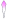).
-
-
Object grip snaps
Snap options for the snapping behaviour of objects.
Shell snapping is automatically enforced when placing a shell in the world, overriding all settings in this group box. However, you can modify the shell snap settings by editing bigworld/tools/worldeditor/options.xml's section shellSnaps. For details on this file's grammar, see the document File Grammar Guide's section → WorldEditor.
-
Enabled
Enables the snapping of objects, according to x, y, z, and Angle values.
-
x
Value (in metres) for snapping items along the x- axis.
-
y
Value (in metres) for snapping items along the y- axis.
-
z
Value (in metres) for snapping items along the z- axis.
-
Angle
Number of degrees by which to rotate the selected item using the mouse wheel (for details, see Mouse controls).
If only one item is selected, then it will be rotated around itself. If more than one item is selected, then they will be rotated around their common centre.
If the Enabled check box is cleared, then this value will be ignored, and selected object(s) will be rotated by 15˚.
-
Shell snaps
Sets x, y, z and Angle to the optimal values for placing shells.
-
1 x 1 x 1
Sets x, y, z and Angle to the optimal values for placing outdoor modular items.
-
.1 x .1 x .1
Sets x, y, z and Angle to the optimal values for placing indoor modular items.
-
-
Placement control
Method of object placement (regarding randomisation of rotation and scale).
-
Setting
Specifies how to place new objects in the world.
You can determine that objects should be placed as they are, or apply random rotation and/or scale. The latter is useful to give a natural look to the finished world, as each instance of the object will have orientation and size different from others.
The drop-down list box has the following options:
-
(Normal Placement)
Objects will be placed with their original size and orientation.
-
Preset list
Objects will be placed in the world with rotation and scale randomised according to values defined for the named preset in the Placement Controls dialog box (for details, see Placement Controls dialog box).
-
-
Opens the Placement Controls dialog box (for details, see Placement Controls dialog box), where you can specify ranges within which rotation and scale will be randomised during object placement.
-
-
Drag on select
Toggles the ability to move selected items via the mouse.
If turned off, objects can only be moved via the position gizmo.
Note
To distinguish from other modes, the brush is a purple dotted circle.
Terrain Texturing brush
Because this panel allow a great number of ways in which to interact with the terrain, the following sub-sections should also be consulted:
-
Terrain Texturing viewport context menu
This sub-section details the menu items available in the viewport's context menu (accessed by right-clicking an area in the viewport ).
-
Terrain Texturing keyboard shortcuts
This sub-section details the keyboard shortcuts that are unique to this mode.
-
.Terrain Texturing mouse controls
This sub-section details the mouse controls that are unique to this mode.
-
This sub-section details the gizmos that are unique to this mode.
For more details on using terrain textures, see the document Content Creation Manual's lesson Create and Apply Terrain Texture Maps.
Terrain Texturing panel (top)
Terrain Texturing panel (bottom)
The list below describes the fields on this panel:
-
Size
Sets the size of the brush (in metres) used to paint the selected texture onto the terrain.
The [ (square left bracket) and ] (square right bracket) keysA decrease and increase the size of the brush, respectively.
-
Strength
Strength of the brush when blending texture onto terrain area underneath brush icon.
As you hold the left mouse button, the texture underneath the brush icon is gradually blended into the existing terrain texture. Small Strength values cause the blending to occur slowly, while the opposite happens for big Strength values.
Dragging the left mouse button blends the selected texture to the underlying terrain. Shift+[ (square left bracket) and Shift+] (square right bracket) keysA decrease and increase the strength of the brush, respectively.
-
Opacity
Maximum contribution of the Active Texture to the terrain under the cursor.
-
Save the brush to disk
This saves the brush settings to disk. The saved brush will appear in the Brushes section of the Asset Browser. The saved settings include the orientation and size of the brush, the texture used, the strength, the opacity, all of the the mask settings except the import mask.
-
Automatic layer limit
This limits the number of texture layers that terrain painting can create.
-
Active texture
-
Active texture's information
Displays a thumbnails of the active texture, alongside its filename, size, and memory footprint.
-
Projection
Group of fields configuring the projection that should be applied to the Active Texture when painting or replacing the texture in the terrain.
All fields in this group can be automatically updated by the texture projection tool (indicated by the
cursor icon — a red- and green-sided
square indicates the clicked area), which adjusts the Projection fields to that of the terrain
under the cursor.
-
Yaw
Rotation about the y-axis to apply to the texture when painting or replacing the texture in the terrain.
-
Pitch
Rotation about the x-axis to apply to the texture when painting or replacing the texture in the terrain.
-
Roll
Rotation about the z-axis to apply to the texture when painting or replacing the texture in the terrain.
-
-
Scaling
Group of fields configuring the scaling to be applied to the Active Texture when painting or replacing the texture in the terrain.
-
U
Scale in the u-direction to apply to the texture when painting or replacing the texture in the terrain.
-
V
Scale in the v-direction to apply to the texture when painting or replacing the texture in the terrain.
-
Links the U and V fields, so that the texture is uniformly scaled.
-
-
Reset
Resets the Project and Scaling groups of fields to the Active Texture's original values.
-
Activates the edit projection mode, in which the texture projection/scale gizmo (for details, see Terrain Texturing gizmos) is displayed for the last-edited area.
Note
You can activate the texture projection/scale gizmo for a different area by clicking it while pressing Shift (for details, see Terrain Texturing keyboard shortcuts and .Terrain Texturing mouse controls).
-
-
Mask
Group of fields configuring how to apply the import mask to the terrain.
-
Show overlay
Determines whether non-paintable areas of the terrain (as determined by the import mask) should be rendered with a red tint.
-
Height
-

Determines whether the texture painting should be restricted to a height range.
-
Min
Minimum terrain height in which texture painting should occur.
-
Max
Maximum terrain height in which texture painting should occur.
-
Fuz
Height difference over which the transition between zero strength and full strength painting will occur.
This can be used to create fuzzy edges. If the value is set to 0, then painting around the Min or Max heights will result in a sharp edge.
-
-
Slope
-

Determines whether the texture painting should be restricted to a slope range.
-
Min
Minimum terrain slope in which texture painting should occur.
-
Max
Maximum terrain slope in which texture painting should occur.
-
Fuz
Slope difference over which the transition between zero strength and full strength painting will occur.
This can be used to create fuzzy edges. If the value is set to 0, then painting around the Min or Max slopes will result in a sharp edge.
-
-
Texture
-

Determines that the texture will only be painted over areas that match the texture mask settings, i.e. it will only paint over the texture mask's selected texture (or if it should exclude those areas, if the Invert Texture Mask check box is selected). This can be useful for replacing textures.
-
Include projection
Determines whether the projection of the terrain under the cursor should be matched for applying the mask.
-
Yaw, Pitch, Roll, U, V
Projection and Scaling fields that the texture underneath the cursor must have for the painting to be enabled (or disabled, if the Invert Texture Mask check box is selected).
-
Invert texture mask
Determines whether the texture mask should be used to specify the areas where texture painting will occur, or specify the areas where it will be excluded.
-
-
Noise
-
Determines whether the texture painting should use the specified noise mask.
-
Noise setup
Opens the Noise Setup dialog box (for details, see Noise Setup dialog box), where you can configure the noise mask.
-
-
Imported
-
Determines whether to use the import mask to paint the Active Texture onto the terrain.
-
Adjust
Allows you to adjust how to use the import mask, by doing the following:
-
Displaying a top view of the space, where you can relocate and resize the import mask.
-
Enabling the Browse button.
-
Enabling the ,
 ,
,  ,
,  , and
, and  buttons.
buttons.
-
Enabling the Strength field.
-
-
Browse
Opens the Open dialog box, where you specify the import mask, which can have the .r16, .raw, or .bmp extension.
If a RAW file is specified, then the RAW Terrain Import dialog box is displayed after clicking the Open button — for details, see RAW Terrain Import dialog box.
-
Rotates the import mask 90º counterclockwise.
-
Rotates the import mask 90º clockwise.
-
Flips the import mask horizontally.
-
Flips the import mask vertically.
-
Inverts the colours in the import mask.
-
Strength
Strength (in percentage) of the import mask.
-
-
Paint entire space using selected mask
Applies the current brush/mask combination to the entire space.
This is a quick way to paint, for example, snow peaks or rock faces.
-
Accessed by right-clicking the viewport while the Terrain Texture Tool toolbar button
() is selected, it contains the following
items:
-
Track cursorA
Determines whether the Chunk Textures panelB should be automatically updated with texture information on the chunk under the cursor.
Please note that this option will update the information on the Chunk Textures panel, but will not automatically activate it.
-
Manage texturesA
Displays/activates the Chunk Textures panelB, already updated with texture information on the chunk under the cursor (for details, see Chunk Textures panel).
-
Deselect chunkA
This menu item is only displayed if the Manage Textures menu item has been previously selected.
Deselects the chunk previously selected by the Manage Textures menu item, and which is currently displayed in the Chunk Textures panel.
-
Select texture for painting
-
List of textures under the mouse cursorC
Changes the active texture to the one selected in this sub-menu.D
-
-
Select texture and opacity for painting
-
List of textures under the mouse cursor (with Opacity in parenthesis)C
Changes the active texture to the one selected in this sub-menuD, and sets the Opacity field to the value displayed in parenthesis in this sub-menu.
-
-
Select texture for mask
-
List of textures under the mouse cursorC
This enables the Texture mask in the Terrain Textures panel and sets the mask texture to the one selected in this sub-menu. The Include Projection and Invert Texture Mask check boxes are turned off. Subsequent painting will replace any textures selected in the sub-menu with the Active Texture.
-
-
Select texture and projection for mask
-
List of textures under the mouse cursorC
This enables the Texture mask in the Terrain Textures panel and sets the mask texture to the one selected in this sub-menu. The Invert Texture Mask check box is turned off. The Include Projection check box is turned on and the Yaw, Pitch, Roll and U, V fields are set to match the yaw, pitch, roll, u and v-scale of the texture selected in the sub-menu. Subsequent painting will replace the texture mask texture with the Active Texture, but only for texture layers whose yaw, pitch, roll, u and v-scales match those of the texture selected in the sub-menu.
-
-
Edit projection and scale
-
List of textures under the mouse cursorC
Performs the same function as the button on top of the Terrain Texturing panel (i.e., it activates the edit projection mode for the texture selected in this sub-menuD, and activates the texture projection/scale gizmo — for details, see Terrain Texturing gizmos).
-
A — If the Manage Textures menu item is selected, then the chunk in which it was selected will remain as the current one in the Chunk Textures panelB, and the Track Cursor option will become temporarily inactive — to reactivate it, select the Deselect Chunk menu item.
B — For details, see Chunk Textures panel.
C — The textures in this sub-menu are listed from most solid to least solid.
D — The Active Texture field is automatically updated with the selected texture.
Please note that for completeness, the information provided in this section is also available in Keyboard shortcuts.
The list of WorldEditor's keyboard shortcuts can be displayed via the Help → Keyboard Shortcuts menu item (for details, see Menu items).
The list below describes the keyboard shortcuts that are unique to this mode:
-
Alt
Activates the texture sampler tool (indicated by the
cursor icon), which samples the dominant
texture of the chunk under the cursor — the Active Texture field will be updated
accordingly.
-
Alt+Ctrl
Activates the texture/opacity sampler tool (indicated by the
cursor icon), which samples the dominant
texture of the chunk under the cursor and its opacity — the
Active Texture and Opacity fields will be updated
accordingly.
-
Alt+Shift
Activates the texture projection tool (indicated by the
cursor icon — a red- and green-sided square
indicates the clicked area), which adjusts the Projection fields to that of the terrain
under the cursor.
-
Shift
Activates the texture projection/scale gizmo (for details, see Terrain Texturing gizmos).
Please note that for completeness, the information provided in this section is also available in Mouse controls.
The list of WorldEditor's mouse controls can be displayed via the Help → Keyboard Shortcuts menu item (for details, see Menu items).
The list below describes the mouse controls that are unique to this mode:
-
Left button click
-
If Alt is pressed
Samples the dominant texture of the terrain under the cursor — the Active Texture field will be updated accordingly.
AltA activates the texture sampler tool (indicated by the
cursor icon).
-
If Alt+Ctrl is pressed
Samples the dominant texture of the terrain under the cursor and its opacity — the Active Texture and Opacity fields will be updated accordingly.
Alt+CtrlA activates the texture/opacity sampler tool (indicated by the
cursor icon).
-
If Alt+Shift is pressed
Adjusts the Projection fields to that of the terrain under the cursor.
Alt+ShiftA activates the texture projection tool (indicated by the
cursor icon — a red- and green-sided
square indicates the clicked area).
-
-
Left button drag
Draws the Active Texture into the terrain, according to the settings specified in the Terrain Texturing panel.
-
Right button click
Displays the Terrain Texturing panel's context menu (for details, see Terrain Texturing viewport context menu).
A — For details, see Terrain Texturing keyboard shortcuts.
Please note that for completeness, the information provided in this section is also available in Gizmos.
-
Texture projection/scale gizmo
Activated by pressing Shift while the Terrain Texture toolbar button —
— (for details, see Toolbar) is selected, or by clicking the
Terrain Texturing panel's
button, this gizmo contains the following
elements (each updating a different field in the panel):
-
Projection gizmo (composed of red, green, and blue circles).
-
Red circle — updates the Roll field.
-
Green circle — updates the Pitch field.
-
Blue circle — updates the Yaw field.
-
-
Scale gizmo (composed of red and green cubes and a red- and green-sided rectangle or grid).
-
Red cube — updates the V field.
-
Green cube — updates the U field.
-
Texture projection/scale gizmo
-
This panel contains the options for the Terrain Height tool.

Terrain Height panel
Note
To distinguish from other modes, the brush is a green dotted circle. The brush for explicit height mode (activated by Ctrl) is a green square.
Terrain Height brush
Terrain Explicit Height brush
There are two basic modes of operation for the terrain brush:
-
Normal use (settings specified on top half of panel)
To gradually increase the height of the terrain, drag over the desired area while holding the left mouse button. To decrease the height, perform the same operation while pressing the middle mouse button (for details, see Mouse controls). Brush strength sets how fast the terrain height will change.
You can use the Shift key to toggle between this tool and the Terrain Filtering tool, which is very useful to allow for quickly smoothing out the terrain as you paint the heights.
-
Explicit Height (activated by pressing Ctrl — for details, see Keyboard shortcuts).
Terrain can immediately have its height changed to a certain value (absolute explicit height mode) or by a certain value (relative explicit height mode).
-
To a certain height:
To immediately set the height of an area:
-
Set the Explicit Height field to the desired value.
-
Select the Absolute radio button.
-
Drag over the desired area while pressing Ctrl — the brush icon changes to a square, indicating the area that will be affected.
-
-
By a certain amount:
To gradually increase the height of an area:
-
Set the Explicit Height field to the desired value.
-
Select the Relative option button.
-
Drag over the desired area while pressing Ctrl — the brush icon changes to a circle, indicating the area that will be affected.
-
-
The list below describes the fields on this panel:
-
For gradual changes
-
Size
Sets the size of the brush (in metres) used to apply the specified height onto the terrain.
The brush size is used both for incremental height changes (when the area affected is indicated by a round brush icon), and absolute height changes (when the area affected is indicated by a square brush icon).
The [ (square left bracket) and ] (square right bracket) keysA decrease and increase the size of the brush, respectively.
-
Strength
Sets the strength of the brush when incrementally applying the specified height to the terrain area underneath the brush icon.
As you hold the left mouse button, the height is gradually incremented to the area indicated by the round brush icon. Small Strength values cause the height to be incremented slowly, while the opposite happens for big Strength values.
Alt+[ (square left bracket) and Alt+] (square right bracket) keysA decrease and increase the strength of the brush, respectively.
-
Brush mode
How affected terrain should change its shape.
-
Flat
Brush's strength does not fall off until it reaches its edge. This results in plateaus with sharp cliff transitions.
-
Linear
Brush's strength falls off linearly away from its centre. Useful for producing pointy triangular heights.
-
Curve
Brush's strength falls off gradually away from its centre. This produces more rounded, softer heights.
-
Average
This mode samples the terrain height at the cursor position and flattens the area around it to that height. This mode is particularly useful for creating roads, paths, terraces and other terrain features.
-
-
-
For immediate changes(activated by CtrlA key)
-
Explicit height
Number of metres by which to change affected terrain.
-
Mode
Determines whether terrain height should be set to Explicit Height, or incremented by it.
-
Absolute
Sets terrain height to Explicit Height when mouse is dragged over the area while CtrlA is pressed.
-
Relative
Increases terrain height by Explicit Height when mouse is dragged over the area while CtrlA is pressed.
-
-
A — For details, see Keyboard shortcuts.
Note
To distinguish from other modes, the brush is a cyan dotted circle.
Terrain Filtering brush
This panel contains options for the terrain filter brush. The brush applies filtering operations to the terrain height. Each filter is a convolution kernel of the type often found in image editing software.
Filters give you the ability to make adjustments to the terrain, with a mechanism similar to the height-sculpting tool.
The most commonly used filters are the smooth ones. They help smooth the terrain, and reduce the jagged polygon appearance of the terrain.
For more details on filters, see the document Content Creation Manual's lesson Sculpt Terrain → Adding refinement filters. (document is accessed by pressing F1 or by selecting the Help → Content Creation menu item — for details, see Menu items).
Terrain Filtering panel
The list below describes the fields on this panel:
-
Size
Sets the size of the brush (in metres) used to apply the chosen filter to the terrain area underneath the brush icon.
The [ (square left bracket) and ] (square right bracket) keysA decrease and increase the size of the brush, respectively.
-
Filter list
List of filters available for adjusting the terrain.
You can use the Shift key to toggle between this tool and the Terrain Height tool, which is very useful to allow for quickly smoothing out the terrain as you paint the heights.
A — For details, see Keyboard shortcuts.
Note
To distinguish from other modes, the brush is a green square.
Terrain Mesh Cut/Repair brush
This panel allows you to cut or repair holes in the terrain.
Holes in the terrain are especially useful for cutting out the area underneath shells so that the shell geometry does not z-fight with the terrain. It can also be used to cut entrances to underground shells.
Terrain Mesh Cut/Repair panel
The list below describes the fields on this panel:
-
Brush mode
Action to be performed with the brush on the terrain underneath it.
-
Cut
Removes the terrain under the brush.
-
Repair
Restores the terrain under the brush.
You can also use the Shift key to toggle between Cut and Repair.
-
-
Size
Sets the size of the brush (in metres) used to apply the chosen filter to the terrain area underneath the brush icon.
The [ (square left bracket) and ] (square right bracket) keysA decrease and increase the size of the brush, respectively.
A — For details, see Keyboard shortcuts.
This panel allows the user to import terrain height data from other tools, such as PhotoShop and WorldMachine, and to tweak how it should be applied to selected area.
It also allows the user to export terrain height data of the selected area.
Terrain Import/Export panel
The list below describes the fields on this panel:
-
Import
Opens the Open dialog box, where you can specify the terrain height map file to be imported.
Accepted extensions are:
-
Greyscale heightmaps — .r16, .raw, .bmp
-
Terragen files — .ter
-
DTED2 files — .dt2
-
-
Current file
Terrain heightmap file to be imported.
-
Export
Opens the Save As dialog box, where you can specify the terrain heightmap file to which export height data about the selected area. Accepted extensions are:
-
Bitmap files (.bmp)
-
Raw files (.r16, .raw)
-
Terragen files (.ter)
Note
If you are planning to use WorldMachine to open the exported file, then please export it as a .raw, since WorldMachine cannot read .r16 files correctly.
-
-
Height
Minimum and maximum height of imported terrain.
-
Min, Max
Height of lowest and highest points in imported terrain map.
If the Absolute heights check box is selected, then all points in the imported map will have their heights adjusted to correspond to the Min and Max values.
When Current File is specified via the Import button, then Min is automatically set to 0.
-
-
Absolute heights
Determines whether the minimum and maximum heights in the imported file(s) should be adjusted to the values in the Height fields.
This field is especially useful when you want importing multiple files for areas next to one another. For example, suppose you have two RAW files that are to be placed next to one another — one with a mountain range and the other with a plain. If this check box is selected, and the Height field's Min value is set to the lowest point in the plain, and the Height field's Max value is set to the highest point in the mountains, then importing the two areas will result in terrain without seams. If this check box is cleared, then the maximum height of the plain will be the same as the maximum height of the mountains.
-
Strength
Percentage to apply to height in each point of map being imported when calculating result.
-
Mode
Terrain import mode.
Contains the following options:
-
Replace
Replaces the current terrain with the one being imported.
-
Additive
For each point in terrain, height is added to the one in map being imported.
-
Subtractive
For each point in terrain, height is subtracted from the one in map being imported.
-
Overlay
Finds the median height in map being imported. Then, considering this median height as being 0 metres high, applies the Additive mode.
-
Minimum
For each point in terrain, height is set to the one in map being imported, if it is lower than the one in current map.
-
Maximum
For each point in terrain, height is set to the one in map being imported, if it is higher than the one in current map.
-
-
Map buttons
Affect the map being imported.
-

Rotates map 90° counter-clockwise.
-
Rotates map 90° clockwise.
-
Flips map horizontally.
-
Flips map vertically.
-
Inverts colours in map.
-
Renormalises colours in map, to reflect changes to Height.
If minimum and maximum heights are changed via the Height field, the colours of map being imported will be out-of-date, until this button is clicked.
-
-
Place
Imports the selected map.
-
Cancel
Cancels the import.
-
Hand drawn map
Changes the level of transparency applied to the world's hand drawn map layer that is rendered over the world's game map.
This allows users to compare between the world as initially specified by the game designer (Hand Drawn Map), and the one implemented by the world builders (Calculated Map).
This panel gives you access to multi-user editing of the world, implemented by the Lock Server (for details, see Lock Server (BWLockD)).
It also allows you to quickly navigate through large worlds by clicking the desired area with the mouse's middle button or scroll wheel (for details on mouse controls while in Project View mode, see Mouse controls).
Project panel
The list below describes the fields on this panel:
-
Message
Description of the changes to the world.
-
Lock selected chunks
Tries to obtain an exclusive lock of the region selected on the map.
Locking a selection is useful for multi-user editing of the world, as it prevents two people from working in the same area.
For details, see Locking an area.
-
Update all
Reads all space files from the server and updates the world.
-
Commit all changes
Writes to the repository all changes made to the world.
After committing, other users will be able to see your changes.
-
Keep locks on commit
Toggles the retention of exclusive locks after committing your changes.
-
Discard all changes
Rejects the changes you made to the world, overwriting them with current version.
-
Keep locks on discard
Toggles the retention of exclusive locks after discarding your changes.
-
Hand drawn map vs. Calculated map
Changes the level of transparency applied to the world's hand drawn map layer that is rendered over the world's game map.
This allows users to compare between the world as initially specified by the game designer (Hand Drawn Map), and the one implemented by the world builders (Calculated Map).
This panel gives access to assets through the Asset Browser, an interface that is available in WorldEditor, ModelEditor, and ParticleEditor. For details, see Asset Browser.
It also allows you to choose how objects should be placed in the world.
Asset Browser panel
The list below describes the fields on this panel:
-
UAL fields
For details, see Asset Browser.
The interaction between the different BigWorld asset types and WorldEditor via the Asset Browser is described in the sections below.
To place an asset in the world:
-
Drag its thumbnail in the Asset List and drop it in the viewport.
— or —
-
Select its thumbnail in the Asset List, place the mouse pointer in the desired location in the world, then press Enter (for details, see Keyboard shortcuts).
Drag-and-drop operation is specific to the tool that implements it, and the type of asset being dragged, as described in the table below (asset types are listed in the order in which they appear in the Asset Tree):
| Asset type | Drop locationA | Effect |
|---|---|---|
| Models | 3D Viewport | Places the dragged asset in the space. |
| Shells | ||
| Trees | ||
| Prefabs | ||
| Entities | ||
| User Data Objects | ||
| Lights | ||
| Particles | ||
| Misc | ||
| Textures | Terrain Texturing panel's Active Texture or Mask Texture fields. | If dropped onto the Active Texture then the texture becomes the texture used when painting. If dropped onto the Mask Texture then the texture becomes the texture replace when painting. |
| Brushes | Terrain Texturing panel. | Changes the current terrain painting brush to the one in the brush file. |
| Post-Processing Effects | Post-Processing panel's graph view | Adds the Effect and its phases into the post-processing chain at the drop position. |
| Post-Processing Phases | Post-Processing panel's graph view | Adds the Phase into a post-processing Effect in the chain at the drop position. |
| Post-Processing Textures | Post-Processing panel's graph view or properties | If dragged on top of a Phase node in the graph view, a popup appears showing the texture properties for the Phase, and you can drop the texture onto one of these properties. It can also be dropped over a texture property of the selected Phase in the properties area. |
| Post-Processing Render Targets | Post-Processing panel's graph view or properties | If dragged on top of a Phase node in the graph view, a popup appears showing the render target and texture properties for the Phase, and you can drop the render target onto one of these properties. It can also be dropped over a render target or texture property of the selected Phase in the properties area. |
| Post-Processing FX Files | Post-Processing panel's graph view or properties | If dragged on top of a Phase node in the graph view, a popup appears showing the FX properties for the Phase, and you can drop the FX file onto one of these properties. It can also be dropped over an FX property of the selected Phase in the properties area. |
Drag-and-drop operation in WorldEditor's Asset Browser panel
A — If the asset file is dropped in the Favourites special virtual folder, then it is added to that folder. For details, see Asset file.
Defined in Asset Browser's configuration file (for details, see Customisation), virtual folders list files of a specific asset type.
For details on the listed asset types, see Assets.
This panel provides functionality for easy listing, searching, selecting and managing of the objects that are currently loaded in the space. This panel provides the following features:
-
Browse the list of objects currently loaded in the space, sorted by any column or property.
-
View the list of objects in collapsible groups, grouped by chunk, asset type, file path, number of triangles, number of primitive calls, etc.
-
Easily select objects in the space by selecting items in the Scene Browser list.
-
Search for objects in the space, by searching in some or all properties of the objects, using multiple keywords and/or DOS-style wild cards.
-
Zoom to an object from the list.
-
Configure which columns or properties to view, and save different configurations as presets.
-
Hide or Unhide objects in the space, one by one, to improve editing of complex spaces.
-
Freeze or Unfreeze objects in the space, one by one, to avoid modifying objects accidentally.
-
Toggle boolean properties of one item or the whole selection with a single click. For example, it allows to change properties such as "casts shadow" and "reflection visible", or the hidden or frozen state, with a single click.
More details follow each of the screen shots below.
Browsing and Selecting:

Scene Browser Panel - Selecting Objects
This screen shot shows the elements of the Scene Browser panel. On the top of the panel we see the search field, the grouping drop-down list, and the tool bar, taking most of the panel's area is the object list, and at the bottom is the status bar. The tool bar includes buttons to hide, unhide, freeze, unfreeze and auto-zoom to object:
-
Hide / Unhide: Allow temporarily hiding objects in order to simplify editing of complex scenes. Hidden objects cannot be selected or seen in the 3D view, but they can be seen in the Scene Browser. The hidden state is an editor-only state, and will not have any effect on the client engine or the server.
-
Freeze / Unfreeze: Allow temporarily freezing objects to avoid accidentally modifying it. Frozen objects cannot be selected or modified in the 3D view, but they can be selected in the Scene Browser. The frozen state is an editor-only state, and will not have any effect on the client engine or the server.
-
Auto-zoom: When enabled, it will zoom to an object as soon as it is selected in the Scene Browser list. When disabled, the user can still zoom to objects by double-clicking or right-clicking on the list.
Selections can be made using the standard selection keys and click combinations, such as Ctrl + click to add/remove to the selection, Shift + click to select a range of items, and so on. Because the Scene Browser supports searching and sorting, it makes it the ideal as an alternative view for selecting items. The screen shot shows the objects grouped by chunk. The search and grouping functionalities will be discussed next.
Searching:

Scene Browser Panel - Searching
In this screen shot, the keywords "crab" and "flower" have been typed into the search field in the top-left of the panel. The search results are quickly shown down in the list, and when specifying multiple keywords, separated by a space, the Scene Browser searches for objects that match all the keywords in the field. Additionally, it is possible to use DOS-style wild cards, using the wild card characters "*" and "?". The search is matched against one or more of the object properties, depending on the search filter selected (see the next screen shot).
Search Filters:
Scene Browser Panel - Search Filters
By clicking on the magnifying glass icon, the user can select one of the different search options, to search in the visible properties only, in all properties, or in one of the built-in common properties.
Grouping:
Scene Browser Panel - Grouping
The list can be viewed as a flat list, sorted by any column or property, or it can be viewed with objects grouped by one of the grouping criteria provided in the "Group By" drop-down list. In the screen shot, the list is being grouped by "Asset Type". Groups can be collapsed or expanded, and show some basic statistics for the group, such as the number of items in the group, the number of triangles used by the group, and the number of primitive calls.
Columns:
Scene Browser Panel - Column Visibility
At the top of the list is a header containing the column names for the properties being shown in the list. These columns are generated from the object properties. Right-clicking on the column header displays the columns menu. This menu allows for showing only the columns that are of interest to the user. The common columns are listed first, then the asset type specific columns below it. After editing the column visibility, the user can just click outside the menu, or click the "Close" menu item at the bottom to close it.
Scene Browser Panel - Column Layouts
It is also possible to save and load column layouts In the columns menu. The user can load a previously saved layout, save the current layout to a new layout file, save the current layout on top of a preexisting layout, rename or delete previously saved layouts, or simply reset the current layout to the default layout. This allows the user to have different sets of columns depending on the kind of world building he or she is doing.
Context Menus:
Scene Browser Panel - List Context Menu
A context menu is also displayed when right-clicking on an object, displaying the same menu items as the context menu of the 3D view, but with the additional option to zoom to the item in the 3D view. Also, it displays menu items to collapse or expand all groups.
Scene Browser Panel - 3D View Context Menu
In the 3D view, an additional option has also been added to the context menu which allows finding the selected object inside the Scene Browser's list.
Additional Notes:
-
The Scene Browser works on the currently loaded objects only. The number of objects loaded depends on how far the far plane is set, but it's important to keep in mind that a large value for the far plane will require too much memory, depending on the complexity of the space.
-
There can be a delay from when an object is loaded, unloaded, or one of its properties is modified, and when the Scene Browser list reflects the change. This is by design, to keep the performance of the application as unaffected by the Scene Browser as possible.
This panel allows creating, editing and previewing post-processing effects that can be later used in the game.
The panel itself is divided in three main areas, as shown in the following image:
Post-Processing Panel - The Three Main Areas
Post-Processing Chains Area:
Contains the list of available post-processing chains and buttons for performing actions specific to post-processing chains editing.
In the chains list, there is a special item representing the system chain, called the Default Chain. When this chain is selected, it allows other subsystems to modify the post-processing chain as they would in the game. For example, changing the Post-Processing graphics setting in the Options panel will set a completely different chain depending on the setting chosen, and changing the weather in the Weather panel will make slight modifications to the system chain to better represent the weather selected.
The action buttons are, from top to bottom:
-
New: Creates a new chain.
-
Rename: Renames the currently selected chain.
-
Duplicate: Copies the currently selected chain into a new chain.
-
Delete: Deletes the selected chain
-
Save: Saves changes made to the currently selected chain.
-
Discard Changes: Brings the chain back to how it was before being modified.
By default, chains are saved as .ppchain
files into the
bigworld\res\system\post_processing\chains folder.
If necessary, the chains folder can be changed by adding the tag
<chainsFolder> inside a
<post_processing> tag, containing the desired
path, in WorldEditor's options.xml file.
Graph view and Tool bar Area:
At the top of this area is a small tool bar that contains summary information about the current chain and three action buttons. The three zoom buttons allow for zooming in, zooming out, and going back to the default zoom respectively. The Preview button toggles previewing of each Phase's result in-place. The Profiling button toggles measuring the time spent by the post-processing chain in the GPU. Important: Please note that WorldEditor's performance will decrease when using the Preview or Profiling modes. The Layout button cycles through the different area arrangements available, to help improve the panel's usability depending on the panel's proportions. The Delete All button removes all the Effects and Phases from the current chain (will ask for confirmation first).
Bellow the tool bar is the chain graph view, which shows the different stages in the current post-processing chain in a graphic way. Each stage is called an Effect (blue nodes), and each Effect can contain stages, each called a Phase (green nodes). The post-processing engine will execute each Phase from each Effect, going from top to bottom and from left to right.
These are the ways you can interact with the graph view:
-
Selected an Effect or Phase: Click on an Effect or Phase to select it, showing its properties in the Properties area.
-
Pan: If you press the left mouse button on the background of the view and hold it down, you can move the mouse to pan the nodes in the view. You can also press space before pressing the mouse down on top of a node to pan, which is useful when the view is too small and doesn't have background areas in view.
-
Zoom In/Out: Use the mouse wheel to zoom in or out into the view, making the nodes bigger. This is particularly useful when in Preview mode .
-
Delete an Effect or Phase: When the mouse cursor is positioned on top of an Effect or Phase, a red close button appears in the top right corner of the node. Click it to delete the Effect or Phase.
-
Enable or Disable an Effect: You can click the button on the bottom right corner of the Effect node to enable or disable that Effect in the chain. Having an Effect disabled might make sense, for example, if that effect will be turned on by script in the game (a grenade explosion, a particular bloom effect, etc).
-
Rearrange Effects: Drag and drop can be used to change the order of Effects in the chain.
-
Rearrange Phases: Drag and drop can also be used to change the position of a Phase in an Effect, or to move the Phase into another Effect.
-
Add an Effect or Phase: It's possible to add a new Effect or a new Phase to an Effect by dragging the desired Effect or Phase from the Asset Browser's Post-Processing Effects or Post-Processing Phases folders respectively.
-
Clone an Effect or Phase: Drag and drop while holding the CTRL key.
-
Assign a Render Target, a Texture or an FX file to a Phase: Simply drag a render target, a texture or an fx file from the Asset Browser over a Phase. Before you release the mouse button, a pop-up menu appears displaying the Phase's properties that can receive the dragged asset.
-
Assign a Phase's output Render Target to another Phase: Simply drag the handle next to the Phase's output render target name on top of the desired destination Phase, and before you release the mouse button, a pop-up menu appears displaying the Phase's properties that can receive the render target.
Properties Area:
Allows editing the properties of the currently selected Effect or Phase in the graph view. Effects and Phases properties are discussed below:
-
Effect properties:
All Effects have only two properties, Effect Name and Bypass. The Effect Name is used only as a label in the editor, and won't necessarily affect its usage in the game. The Bypass property is a vector of four floats that determines if the Effect is enabled and if it should be applied during rendering or not. At the moment, this value is tied with the Bypass button on the bottom right corner of the node , and only the alpha value is used (0 for disabled or non 0 for enabled).
-
Phase properties:
There are several different types of Phases, and each type has its own set of properties that can be defined in either Python or C++, but a few deserve special attention:
-
Render Target: Contains the name of the output render target for the Phase. This render target can be filled in by copy & paste from another Phase's Render Target field, or can be dragged from the Asset Browser's Post-Processing Render Targets folder. Render Targets are defined in script by the game programmers beforehand. A special render target identified as "backBuffer" represents the screen's back buffer.
-
Clear Render Target: If set to true, the output render target is cleared before applying the Phase's result. If set to false, the results are accumulated.
-
FX File: Some Phases have an associated DirectX .fx file which contains the shader code to perform the desired processing. The user can type it in, browse for it using a standard file open dialog, or can drag it from the Asset Browser's Post-Processing FX Files folder.
-
Source Blend and Destination Blend: Allows choosing the desired blending modes for the Phase.
-
inputTexture: Some phases contain one or more fields for textures and/or render targets to be used as inputs by the Phase's shader. In most cases, the user will want to use the previous Phase's Render Target output as the input texture for the Phase, but in general this field can be set to any Render Target or texture. For example, a clever post-processing chain will have a down sampling Effect which outputs to an internal render target, and this render target can then be used one or more times as input in Phases of other Effects (such as the Bloom in the default chain).
-
alpha, additionalAlpha: These field control how much of the Phase's processing is actually blended into the output render target. In some cases an Effect won't have any visible impact on the screen, even when the Bypass button is on, because the alpha value is 0.
Care has been taken into giving all properties sensible names and informative tool-tips, so they are self explanatory. It's also recommended that you study the system's default chain to understand better how specific Phase properties are set.
-
If custom Phases or Render Targets are needed in addition to the included ones, your client engine programmer will have to add them by editing the post-processing scripts. Once the artist has created a set of chains to be used in the game, the game programmer can load these chains when needed from the game engine. For more information, see the Client Programming Guide.
This panel allows you to edit the properties for the currently selected item or group of items (except for chunk properties). Note that this action will flag the current chunk as dirty.
The list of displayed properties depends on the item selected — for details, see Client Programming Guide's section 3D Engine (Moo) → EffectMaterial → Artist-editable/tweakable variables.
Example of an entity's properties
Example of a model's properties
Common properties when multiple objects are selected
The list below describes some of the fields that appear on this panel:
-
Object name
Name of the selected object.
-
Property list
-
Animation
List of animations specified for the model in the .model file (for details on this file's grammar, see the document File Grammar Guide's section .model).
Value is set to the animation currently being played.
-
Animation speed
Speed of the animation being currently played.
-
Chunk
Chunk where the item is located.
-
Client only
Determines that the entity will not exist on the server, and will not have cell nor base scripts.
For details, see the document Client Programming Guide's section Entities → Entity scripts.
-
Colour
RGB colour of the selected item, in hexadecimal format.
-
Cone angle
Sets the angle of the cone of light generated by spot light.
The angle at which the light is placed in relation the ground or model affects its intensity.
Available only for spot lights.
-
Dynamic
Specifies that light should be applied to dynamic, i.e., moving objects.
Available only for directional lights, omni lights, and spot lights.
-
Direction pitch, Direction yaw, Direction roll
Pitch, yaw, and roll of direction of the light.
Available only for directional lights and spot lights.
-
Inner radius
Sets the area over which the light will be at full intensity.
Available only for omni lights and spot lights.
-
Model name
Model file (for details on this file's grammar, see the document File Grammar Guide's section .model).
-
Multiplier
Sets the multiplier for the RGB value of the colour.
The RGB values will be multiplied by the value set for this field, effectively making the item brighter.
Available only for lights.
-
Outer radius
Sets the total area influenced by light.
The area starting at Inner Radius will have light at full intensity, which will be faded away until it is completely off when it reaches Outer Radius.
Available only for omni lights and spot lights.
-
Outside only
Specifies whether the object can only be placed on outside chunks.
If an object placed in an inside chunk has this property set to true, then WorldEditor will move it to a suitable outside chunk.
This property is used in cases when a model is to be rendered from outdoors, and acts as a facade for an indoor shell. This prevents the model from being recognised as belonging to the indoor shell, and hence being lit as such.
The exterior of a house that surrounds an indoor shell is a good example of when this property would be used.
-
Position.x, Position.y, Position.z
Position of the item along the respective axis.
-
Rotation pitch, Rotation yaw, Rotation roll
Pitch, yaw, and roll of the item in its currently placement in the world.
-
Scale.x, Scale.y, Scale.z
Scale in which to draw the item along the respective axis.
-
Specular
Specifies that light should be applied to materials with a specular map specified.
Available only for directional lights, omni lights, and spot lights.
-
Static
Specifies that light should be applied to static, i.e., scene objects.
Available only for directional lights, omni lights, and spot lights.
-
Colour adjust
It contains the following fields:
-
Red,Green,Blue
Sets the red, green, and blue components of the colour, respectively.
-
Multiplier
Value to multiply colour's RGB value by.
This affects the overall luminosity of a light without affecting its hue.
Available only for omni lights and spot lights.
-
-
This panel allows you to check which textures are being used on a chunk, thus allowing you to better manage the existing texture layers painted onto it.
For more details on managing chunks' terrain textures, see the document Content Creation Manual's lesson Create and Apply Terrain Texture Maps.
Chunk Textures panel
The list below describes the fields on this panel:
-
Show when the Terrain Texturing tool is activated
Determines whether this panel should be activated/displayed whenever the Terrain Texture Tool —
— toolbar button is clicked.
-
Chunk
ID of the chunk which texture information is being displayed.
-
/
Determines if WorldEditor should automatically display texture information from the chunk under the cursor.
-
 /
/
Determines if WorldEditor should outline the chunk under the cursor.
-
-
Texture management
-
Maximum textures per chunk warning
Number of textures per chunk above which a warning message should be displayed in the offending chunks.
The warning will be displayed in the chunk as illustrated in the image below.
-
 /
/
Determines whether WorldEditor should display the "maximum texture per chunk" warning.
Example of a chunk displaying the "maximum textures per chunk" warning
-
-
-
Texture thumbnail/mask
Thumbnails of the texture used in the chunk under the cursor, next to the mask indicating the strength in which it is used.
Texture thumbnail/mask information
The following keys can be used with this panel:
-
Left button click
Adds the texture under the mouse cursor to the selection.
-
Left button click + CTRL key
Toggles the texture under the mouse cursor into or out of the selection.
-
Space key
Merges the selected textures into the last texture selected. The last texture selected has a slightly thicker red rectangle around it.
-
Delete key
Deletes the selected textures. They are replaced by the texture that was not selected and contributes the most to the chunk.
-
Right button click
Displays the Chunk Textures panel's context menu as below.
The Chunk Textures panel's context menu
The menu items are as follows:
-
Use Texture
Select the texture as the Active Texture on the Terrain Texturing panel.
-
Edit Projection and Scale
Activates the edit projection mode of the Terrain Texturing panel with the selected texture being the edited texture layer. See .Terrain Texturing mouse controls
-
Set as Texture Mask
Selects the texture as the texture mask on the Terrain Texturing panel.
-
Remove Texture(s)
Deletes the selected textures. They are replaced by the texture that was not selected and contributes the most to the chunk. This is the same as pressing the Delete key.
-
Merge Textures
Merges the selected textures into the last texture selected. The last texture selected has a slightly thicker red rectangle around it. This is the same as pressing the Space key.
-
This panel allows you to specify the scene elements that should be rendered in WorldEditor, and general settings such as far plane and the kind of lighting to render.
General Options panel
The list below describes the fields on this panel:
-
Show
Group of settings configuring the visibility of items in the world.
-
Game Objects
Toggles the rendering of Game Objects.
-
Entities
Toggles the rendering of Entities.
-
User Data Objects
Toggles the rendering of User Data Objects and the old patrol path graphs.
-
-
Scenery
Toggles the rendering of scenery items in the world.
-
Wireframe
Toggles the rendering of scenery items as wireframe.
-
Particles
Toggles the rendering of particle systems.
-
BSP
Toggles the rendering of objects' BSPs.
-
Particle system bounding boxes
Toggles the rendering of particle systems' bounding boxes.
-
Water
Toggles the rendering of water items (for details on water properties, see the document Content Creation Manual's lesson Add Water to the World).
-
Reflection,Simulation
Toggles the respective feature for all bodies of water in the world.
For an item to be reflected in a body of water and suffer refraction, its property reflection visible must be set to true in the Properties panel (for details, see Properties panel).
-
-
Shells
Toggles the rendering of shells in the world.
-
Game visibility
Toggles the use of the portal visibility algorithm by the shell.
When selected, shells will draw the portal system exactly as when running the game. When cleared, shells in the viewing frustum will draw without using the portal visibility algorithm.
It is recommended to clear this option when building shell systems and placing lighting and objects in them. If you require rendering performance improvements whilst building the world, then select this option when you are not working on shells. It will it help WorldEditor to render the world more quickly.
-
-
-
Proxies
Toggles the rendering of proxy models which are a physical representation of lights and particle systems.
-
Editor proxies
Toggles the display of proxy models defined for models in ModelEditor.A
-
Particles
Toggles the display of all particle systems proxy model. It also expands to give you the option of large or small proxy model rendering.
-
Lights
Toggles the rendering of lights of the respective type. Each light type also expands to give you the option of large or small proxy model rendering.
-
-
Terrain
Toggles the rendering of the terrain.
-
Wireframe
Toggles the rendering of scenery items as wireframe.
-
Dynamic Level of Detail
Toggles the rendering of terrain with constant LOD or dynamic LOD.
-
-
Environment
Toggles the rendering of all selected environment items.
-
Sky
Toggles the rendering of sky gradient dome and stars, according to settings specified in the Environment Options panel.A
-
Sky Boxes
Toggles the rendering of both the space skyboxes and the weather skyboxes, according to settings specified in the Environment Options panel.A
-
Sun and moon
Toggles the drawing of the sun and the moon, according to settings specified in the Environment Options panel's Sun/Moon Inclination group box.A
-
Fog
Toggles the drawing of fog, according to settings specified in the Environment Options panel's Sky Box Gradient field.A
For details, see the document Content Creation Manual's lesson Fog Colour.
-
-
Heaven and earth portals
Toggles the visibility of the heaven and earth portals used by chunks.
This is especially useful when building terrain, since you will be able to see the maximum and minimum heights allowed by outdoor chunks. Generally, you should not raise or lower the terrain beyond the heaven and earth portals.
-
Shade read-only areas
Toggles the shading in red of read-only areas.
When multiple users are working on the same space, WorldEditor is connected to the Lock Server (bwlockd). Only the editable and selectable objects will be displayed in their natural colours. For more details, see Lock Server (BWLockD).
-
-
Far plane
Adjusts the far plane. While the value defaults to 500 metres, it is often useful to adjust the far plane to something much farther away while editing the world in WorldEditor, so you can see more of it at any one time.
-
Lighting
Lists the option of rendering of lighting in the world.
-
Standard
Lighting should be rendered as it will appear during the game.
-
Dynamic
Dynamic lighting should be rendered.
-
Specular
Specular lighting should be rendered.
-
-
Engine graphics settings
Graphics settings to run WorldEditor with.
These fields are useful for previewing the game in a variety of configurations that the users might run it with.
For details on graphics settings, see the document Client Programming Guide's section 3D Engine (Moo)→Graphics settings.
-
Mrt Depth
Option to enable/disable advanced post processing used for effects such as water deepening and automatic foaming.
-
Sky Light Map
Option to enable/disable cloud shadows.
For details on cloud shadows, see the document Client Programming Guide's section Terrain→Cloud shadows.
-
Terrain Specular
Option to enable/disabled terrain specular lighting.B
-
Shader Version Cap
Option to set the shader version (Shader Model 3/Shader Model 2/Shader Model 1/Shader Model 0) available to the engine.
-
Texture Quality
Option to set the quality (High/Medium/Low) of textures rendered by the engine.C
-
Texture Compression
Option to enable/disable texture compression.C
-
Texture Filtering
Option to set the texture filtering (Anisotropic 16x/Anisotropic 8x/Anisotropic 4x/Anisotropic 2x/Trilinear/Bileaner/Point).C
-
Morph Vertices
Option to enable/disable vertex morphing in the engine.
For details on vertex morphing, see the document Client Programming Guide's section 3D Engine (Moo)→Features→Vertex morphing.
-
Terrain LOD
Option to set the geo-morphing factor (Far/Medium/Near) of the terrain.B
-
Terrain Mesh Resolution
Option to set the mesh resolution (High/Medium/Low) of the terrain.B
-
Post Processing
Option to choose the quality level of post-processing effects.
This options mirrors the client graphics setting, allowing for High,Medium,Low and None. If the 'Default Chain' is selected in the PostProcessing panel, then selecting High,Medium and Low will load the high_graphics_setting.ppchain, medium_graphics_setting.ppchain and low_graphics_setting.ppchain files respectively. If you modify and save these .ppchain files, you will see the results in both WorldEditor and the client.
For details on post-processing, see the document Client Programming Guide's section Post Processing, and the document Content Creation Manual's lesson Post Processing.
-
Water Quality
Option to set the quality (High/Medium/Low/Lowest) of the water rendered by the engine.D
-
Water Simulation
Option to set the quality (High/Low/Off) of the water's simulation.D
-
Flora Density
Option to set the density (Very High/High/Medium/Low/Off) of flora objects rendered in the game world.
-
A — For details on defining a proxy for a model, see Object Properties panel.
B — For details on terrain, see the document Client Programming Guide's section Terrain.
C — For details on textures, see the document Client Programming Guide's section 3D Engine (Moo)→Graphics settings.
D — For details on water settings, see the document Client Programming Guide's section Water→Render settings→Setting the quality.
This panel allows quick navigation to locations in the world, pre-saved or not, and configures player walkthrough mode.
Navigation panel
The list below describes the fields on this panel:
-
Locations
-
Search bar
Restricts the locations displayed in the list to the ones containing the typed string. The list is refreshed automatically as the string is typed.
-
Location list
List of positions saved on previous sessions.
-
Add
Adds the current camera position to the list.
-
Rename
Renames the selected location.
-
Update
Updates the selected location with the current camera position.
-
Remove
Removes the selected location from the list.
-
Move to
Moves camera to the selected location.
-
-
Position
-
x,y,z
Current XYZ position of the camera, dynamically updated by WorldEditor.
-
Move to
Moves camera to the XYZ position specified by the user.
-
-
Chunk
-
Chunk ID
Chunk in which the camera currently is, dynamically updated by WorldEditor.
-
Move to
Moves camera to the centre of specified chunk.
-
-
Player preview mode
-
Enabled
Toggles the player walkthrough mode, in which the camera moves in the world as if attached to the player. This mode can be toggled via ~ (tilde) keyboard shortcut.
-
Camera height
Height of the camera during player walkthrough mode.
-
This panel allows you to create and edit weather systems, and specify which kind of weather should display in which space.
Weather Preview panel
The list below describes the fields on this panel:
-
Weather Systems list
List of all available weather systems for your game. Systems are included / excluded from the current space by using the checkboxes next to the system name.
-
New
Create a new weather system.
-
Rename
Rename the currently selected system. You can achieve this also by pressing F2 or double-clicking on the system name.
-
Delete
Delete the currently selected system.
-
Make Default
Set the current selected weather system as the default weather system for this space.
-
Sky Boxes list
List of the sky boxes used by the weather system. These can be any .model files, although the .model files should use one of the environment shaders in order to display correctly at the far plane.
-
Add...
Add a new sky box to the selected weather system. Pressing this button invokes a dialog box allowing you to select a .model file. An easier way to add sky boxes to your weather system is to simply drag and drop them from the Asset Browser.
-
Delete All
Delete all sky boxes from the list.
-
Properties
Property editor for all other weather system properties.
-
Special Effect File
This field accepts any Special Effect XML file. However, the effect file needs to be authored specifically for weather systems - adding an explosion effect here wouldn't make much sense. You can drag and drop files from the Special Effects virtual folder in the Asset Browser.
-
Rain Amount
How much of the built-in rain effect to play. The built-in rain effect layers 4 sheets of rain texture over the camera, and has a built-in fog emitter.
-
Sun
How to colourise the time-of-day sunlight (see the Environment page). Setting this value to white will mean the weather system has no effect on the normal sunlight colours. The multiplier field allows you to set a sunlight colour, and then adjust its brightness independently. Note that this allows you to overbrighten the sunlight colour, although on some low-end cards this will not work as desired.
-
Ambient
Similar to the sun colour above, but affects the Ambient light.
-
Fog
Colourises the time-of-day fog colour. The 4th field represents the fog density. This is interpreted as 'additional fogging.' The standard fogging value (1.0) reaches the far plane to hide clipping, and tries to not interfere with the rest of the scene too much. Dialing up the density of the fog brings the fog closer to the camera.
-
Sky Box Fog Response
Specifies how much the skyboxes should respond to any extra fog dialed in via the fog density slider. For any fog value greater than the default of 1.0, a certain amount of that is applied to the sky boxes - this is the sky box fog response value.
-
Wind Speed
Set the base wind speed for the weather. The wind affects the cloud layers, the flora, the trees, and the particle systems. This X/Z wind speed is in world coordinates, in metres per second.
-
Wind Gustiness
Set the gustiness of the wind, or, how much the wind varies around the base wind speed value.
-
Temperature
Sets the base temperature level for the weather system. Currently this value is not used by the default weather system engine.
-
Bloom Settings
This group sets up the blooming filter to further enhance the mood set by the selected weather system.
-
Attenuation
This is a colour multiplier that tints the colour of each stage of the bloom/blur filter, thus affecting the final colour of the bloom effect. Since it is applied per-pass to the filter, it is closely linked to the number of passes. With a higher number of passes, the blooming is very sensitive to the colour attenuation values, and so the colour attenuation will need to be fairly close to pure white.
-
Num Passes
Sets the number of blur passes performed by the bloom filter. While increasing this number does cost in terms of fill-rate, the cost is relatively small because the bloom filter uses quarter-size render targets to perform the blurring passes.
-
Sensitivity
This value specifies how sensitive the bloom filter is to bright colours on the screen. Setting this to a very low value makes causes the filter to respond to all intensities of colour in the frame buffer, creating more of a blur effect than a blooming one. Higher values cause the filter to react to just the brighter regions of the frame buffer, creating more of a traditional bloom effect. In the underlying bloom filter, the sensitivity is the mathematical exponent used to high-pass filter the back buffer to select the colours used in the blurring passes.
-
Filter Width
Sets the width, in texels, of the bloom filter kernel. The default value is 1, which provides the best quality effect, but will require a higher number of passes to achieve a large bloom spread. Higher values increase the width of the bloom spread, but if the filter width is too high, you will see fragmentation in the bloom filter as it skips pixels during the blur phase. This fragmentation caused by a higher filter width can be fixed by increasing the number of blurring passes, since it is cumulative effect.
This panel allows you to specify environment settings to change world's overall rendering.
Environment Options panel (top)
Environment Options panel (bottom)
Tint Shader
Tint Timeline and Selected Tint
The list below describes the fields on this panel:
-
Sky bitmaps and gradient
-
Sky bitmaps
List of image files to display as the sky. If more than one file is specified, then they are superimposed in the world. The Weather Systems entry in the list is always there, and cannot be deleted. It refers to the sky boxes in use by whatever Weather System is currently displayed. This item is included in the list so that you can sort the space's sky boxes with respect to the weather system ones.
-
Skybox gradient
File containing time of day x height in the sky gradient information.
Skybox gradient mechanism
-
-
Time Of Day File fields
-
Time of day file
XML file containing the settings for the fields in the following group boxes:
-
Game Options
-
Sun/Moon Inclination
-
Time
-
Animation Colours
-
-

Opens the Open dialog box, where yon can specify the Time Of Day File.
-
Open the Saves As dialog box, where you can save the current settings to a new XML time-of-day file.
-
-
Game options
-
Hour length
Number of seconds in an hour of game world's time.
-
Start time
Time of day in which the game should start.
-
-
Sun/moon inclination
-
Sun angle
Angle formed between sun and the horizon. Value ranges from 0° to 90°.
-
Moon angle
Angle formed between sun and the horizon. Value ranges from 0° to 90°.
-
-
Time
-
Time of day
Current time of day in the world.
This value changes, and can also be changed by dragging Tint Timeline's Time Of Day bar, and by clicking Tint Timeline's Tint Gradient.
-
-
Animation colours
-
Sun animation
Selects Tint Shader for sun animation.
-
Ambient animation
Selects Tint Shader for sun animation.
-
Reset
Resets Tint Shader values for selected animation (sun or ambient).
These values are the same ones used for FantasyDemo.
-
-
Tint Timeline
-
Time point
Point of transition between two tints.
Can be dragged up and down (except the first and last one), with value being automatically updated.
-
Tint gradient
Displays the tint on each Tint Point, and the values in between.
Clicking the Tint Gradient changes Time Of Day to respective time.
-
Tint point
Tint selected for the time of day.
Can be dragged up and down (except the first and last one), with value in the timescale being automatically updated.
-
Time of day indicator
Sets the current time of day in the world.
This bar changes, and can also be changed by Time Of Day slider and by clicking the Tint Gradient.
-
Selected tint point indicator
Indicates which Tint Point is currently selected.
Selected Tint group is automatically updated to reflect the selected tint values.
-
-
Selected tint
-
Tint slider/ selector
Composed of 2 parts:
-
Slider — Colour to be applied to the particle in the selected Time Point.
-
Selector — Luminosity of the colour selected in the slider part of this field.
The tint might be also be specified in the RGB Value fields.
The Tint Gradient and Tint Point in the Tint Timeline, and the RGB Values are automatically updated with the values selected.
-
-
Selected tint sample
Displays the tint selected in Tint Slider/Selector.
-
RGB values
-
R, G, B
Red, green, and blue components of the tint in the selected Time Point.
The tint might also be specified in the Tint Slider/Selector.
The Tint Gradient and Tint Point in the Tint Timeline, and the Tint Slider/Selector are automatically updated with the values specified.
-
-
Add colour
Adds a new Time Point in the Tint Timeline.
The new Time Point is added on top of the final one, so it is not immediately visible to the user. You have to drag it up in the Tint Timeline before specifying its settings.
-
Remove colour
Deletes the Time Point currently selected in the Tint Timeline. The first and last Time Points cannot be deleted.
-
-
Sky file fields
-
Sky file
XML file containing the settings for fields in the Atmospheric Effects group box.
-
Opens the Open dialog box, where yon can specify the Sky File.
-

Open the Saves As dialog box, where you can save the current settings to a new XML time-of-day file.
-
-
Atmospheric effects
For details on these settings, see the Content Creation Manual's lesson Change Environmental Settings → Changing dynamic environment settings.
-
MIE amount
Overall MIE scattering amount.
This is the amount of scattering effect, which simulates forward scattering of light as it travels through the atmosphere.
-
Turbidity offset
Base level of turbidity, or amount of suspended particulate matter.
Proportionally affects MIE scattering effect.
-
Turbidity factor
Multiplier on air turbidity.
It defines how MIE scattering effect responds to increases in the global fog amount.
-
Vertex effect
Vertex height contribution to MIE scattering.
The vertex effect gives the scattering an elongated shape at the horizon.
-
Sun height effect
Sun height contribution to MIE scattering.
The sun height effect decreases the overall amount of the effect when the sun is high in the sky (i.e., noon).
-
Power
Mathematical power of MIE scattering effect.
It makes the effect look less like a flat shaded circle, and more like a circular gradient with emphasis being put on white nearer the sun.
-
-
Texture LODs
-
Start
Distance in metres from the camera in which high-resolution texture blend will be used.
Higher values will result in better visual results (especially on steep terrain), but will result in higher memory use.
Recommend value is between 200 and 1,000.
-
Blend region
Distance in metres beyond Start field over which transition between high and low resolutions will occur.
Recommended value is between 100 and 500.
-
Preload
Distance in metres beyond Blend Region at which the high-resolution textures will be loaded.
Recommend value is between 100 and 200.
-
This panel allows you to gauge the amount of luminance and colour in the scene, giving the world builder the ability to analyse the scene regarding the balance in the distribution of colours across the spectrum.
You can also use F11 (for details, see Keyboard shortcuts) to show the histograms in WorldEditor's main window — for details, see Histogram console.
Histogram panel
The list below describes the fields on this panel:
-
Luminance
Distribution of luminance in the current scene.
-
RGB
Distribution of red, green, and blue colours in the current scene.
-
Red, Green, Blue
Toggles the graphing of the respective colour component in the histograms.
-
-
Range
Sets the vertical range ratio of the Luminance and RGB histograms.
A value of 1 causes the histograms to be graphed using the whole vertical size of the panel to plot the maximum values. The value of this field will be multiplied by the value in y-axis, thus augmenting the graphing size of components that would be otherwise too small to be graphed. The series of screenshots below display the RGB histogram being graphed with the following values for Range (respectively): 1, 2, 4, and 8.
Range = 1
Range = 2
Range = 4
Range = 8
This panel displays error, debug, and general information messages output by the tool.
To simplify debugging, these messages are also logged to bigworld/tools/worldeditor/worldeditor.log (for details, see Activity logging).
BigWorld Messages panel
The list below describes the fields on this panel:
-
Show data, Show time, Show priority
Toggles the visibility of the respective column.
-
Error, Warning, Notice, Assets, Info
Toggles the visibility of the respective type of message.
Please note that the Info check box toggles the visibility of Info, Trace and Debug messages.
Note
Asset errors are listed in bold letters as tree entries.
Those entries can be clicked to reveal the instances of the missing asset — each sub-item acts as a link that moves the view to the bounds of the missing asset.
The following sections highlight some important details about elements in WorldEditor.
There are two types of chunks in BigWorld:
-
Outdoor chunks
Have a fixed size of 100x100 metres.
-
Indoor chunks
Also called shells, have the size and shape determined by the models that represent them.
Each chunk can have any number of chunk items associated with it. For example, indoor chunks may have chunk items such as lights, tables, and chairs, while outdoor chunks may have trees, rocks, or the terrain (the terrain is not a chunk in itself, only a chunk item).
Restricted to indoor chunks, chunk templates are useful to reuse the lighting settings of a shell.
When a shell that for which a chunk template was saved in placed in the world, WorldEditor automatically places the lights specified by the template in that shell.
To save a chunk as a template, select the Edit → Save Chunk As Template menu item.
Current versions of WorldEditor do not offer a mechanism to resize an existing space. Instead, what has to be done is to create a new space with the desired dimensions, then move the existing objects to it. There are two ways to do this, one is to copy all the old space's files except space.settings file into the new space's directory. This will mean that old space information will override the new space information for each chunk. The limitation of enlarging the space through this way is you can only enlarge the space with the old space information in the center.
Another way is to resize the space using prefabs. The list below describes each step of this process:
-
Load the space for which you want to add/delete chunks (if different from current one)
-
Select the File → Open Space menu itemA — the Browse For Folder dialog boxB will be displayed. If there are unsaved changes, then the Changed Files dialog boxB will be displayed. Choose the appropriate answer for you case.
-
Select the space which size you want to change, then click the Open Space button — the selected space will be loaded.
-
-
Select desired world items
-
Set the Object panel'sC Selection Filter drop-down list box to All.
-
Select the Edit → Select All menu itemA, to select all objects in the space (if you want to enlarge space). Or, select desired chunks and all objects in them by drawing a rectangle around them using mouse dragging.
-
-
Save selected world items to a prefab file
-
Select the Edit → Save Selection As Prefab menu itemA — the Save As dialog boxB will be displayed.
-
Specify the name and folder in which you want to save the file, then click the Save button.
-
Select the File → New Space menu itemA — the New Space dialog boxB will be displayed.
-
Specify the name of the space and its dimensions, then click the Create button — the new space will be created and loaded.
-
-
Import world items from saved prefab file
-
In the Asset BrowserD, select the Prefabs virtual folder.
-
In the Asset List, select the file saved in step 3.
-
Move the mouse over the viewport, then press EnterE.
-
The objects saved on the old space have now been added to the new space. Note: The existing terrain inside the prefab's bound will be replaced by the terrain saved in the prefab. If you put the prefab in the wrong place and want to correct it, you have to undo the placing and place the prefab again.
-
A — For details, see Menu items.
B — For details, see Dialog boxes.
C — For details, see Object panel.
D — For details, see Asset Browser panel.
E — For details, see Keyboard shortcuts.
A portal links chunks, allowing traverse and visibility between them. When portals are connected, they become invisible — a complete world should not have visible portals.
For indoor chunks, portals form part of the shell, and can be modified in any 3D package — in WorldEditor they can be selected, but not changed. Indoor portals are only visible when disconnected from other indoor portals.
A portal in 3ds Max can be flagged as an exit portal, meaning that it will open up to the terrain, rather than to another indoor chunk. Exit portals are not visible in WorldEditor. When a shell with an exit portal is placed in the world, the chunk in which it is placed creates a new virtual boundary and a new portal to match the now adjacent indoor chunk. Other than this, outdoor chunks have fixed portals to adjacent outdoor chunks which should not be changed — which is why they cannot be selected in WorldEditor.
Note that the external flag in the properties of a portal is deprecated, although it still causes the portal to be shaded to yellow. But other than that, the flag has no technical effect.
Directional lights spread an even light over an area, unlike other kinds of light, which spread out from a specific point.
They are useful for things like the sun, whose source is very distant, and whose light needs to affect a large area. As a result, directional lights are not available for indoor chunks, which should use omni and ambient lighting instead.
For more details on the different kind of lights, see Lighting Setup panel.
When a model is placed in WorldEditor, the centre of its bounding box is used to determine the chunk in which the model will be placed.
This is suitable for most situations — placing an object in a room causes the object to be associated to that room, placing an object outdoors causes the object to be associated with an outdoor chunk.
But it might not be suitable in cases where there is a single indoor shell with an exit portal, and you want to place an enclosing outer wall around that shell. In this case, the wall and the interior shell will be approximately the same size, and will be placed in approximately the same location. In this scenario, WorldEditor would automatically place the outer walls inside the shell. This would mean that the external walls only get lit by the indoor lights, and would be bound by the visibility rules of that indoor shell's exit portal.
To overcome this problem, models have the outside only flag (accessed via the Properties panel (for details, see Properties panel).
After changing this value to true, WorldEditor will automatically change the model's location to an outdoor chunk. Additionally, as you move that model around the world, WorldEditor makes sure that it is never placed in an indoor chunk.
If you have a model that will need to be always designated as outside only, then you can do it by editing the .model file, as in the example below:
<rock.model> ... <editorOnly>
Example file rock.model
|
|
Make sure to follow the exact capitalization for the inserted text. |
If WorldEditor starts rendering your space with random colours or adding objects by its own accord, then you can force it to regenerate the space map by deleting the cache.
In order to regenerate the space, follow the steps below:
-
Shut down WorldEditor.
-
Browse to the folder containing the space you were working in —
<res>/spaces/<space>. -
In that folder, delete the files space.thumbnail.dds and space.thumbnail.timestamps.
-
Restart WorldEditor.
-
The space map will be recreated.
If this problem keeps occurring, then please contact the BigWorld support engineers, providing the following information:
-
Your machine's graphics card
-
Version of your video drivers.
To create a new world, the first step is to create a space using the File → New Space menu item.
After that, create a hand-drawn map of the whole world — as simple or as detailed as desired —, making sure that it is to scale. This hand-drawn map will act as a guide for the artists creating the world — they will be able to follow the guidelines in the map for performing task such as choosing the regions to lock for editing.
The bitmap can have any size, as long as it is proportional to your space. For example, if your space is 200x150 chunks, then your bitmap could be 640x480.
Once having drawn the world, save it as space.map.bmp in your newly created space folder and commit it alongside the map texture to the CVS repository.
All files relating to the new space (located in
<res>/spaces/<space>)
will have to be checked out on the machines that will be editing it with
WorldEditor.
The Lock Server (bwlockd) can work with any new spaces committed to your server without having to be restarted.
For more details on the Lock Server, see Lock Server (BWLockD).
Errors regarding bwlockd are displayed in the message window. The list below describes the meaning of some of the errors you might come across, and how to correct them:
-
Unable to connect to bwlockd
Generic error message displayed after any problem with the Lock Server.
Look at the error message above this one to determine the specific problem.
-
Connect(): Couldn't connect, last error is 10061
The Lock Server is not running, or you have specified an incorrect host or port number in WorldEditor's configuration file bigworld/tools/worldeditor/options.xml, tag <bwlockd> (for details on this file's grammar, see the document File Grammar Guide's section options.xml → WorldEditor.)
Make sure that the server is running, the specified host is correct, and the specified port is 8168.
-
Connect(): Couldn't set lockspace
The space you are currently editing could not be found by the Lock Server.
Make sure that you have chosen the correct space, and that it is checked out on the server, so the Lock Server can find it.
In order to provide a trace of the activities performed by the user, thus simplifying the debug process, all on-screen warning and errors (displayed in the BigWorld Messages panel (for details, see BigWorld Messages panel) are logged to file bigworld/tools/worldeditor/worldeditor.log.
Apart from errors and warning, actions like changing the Object panel's Selection Filter or Locking Mode, or saving the scene, are also logged to file.
The example below illustrates an example of the generated log file.
/------------------------------------------------------------------------\ WorldEditor 1.8 (compiled at Oct 11 2006 at 20:20:16) starting on 11/15/06 Action: entered Object modeAction: Entering XZ snap mode Action: characters/npc/chicken/chicken.model
Action: Selection Filter: All Action: Added model Critical: Saving... Action: Calculating lighting for 00000026i
Action: Calculating thumbnails for 00000002o Action: Calculating thumbnails for 00000026i Action: Saving 00000002o Action: Saving 00000026i Critical: Save complete
Example BigWorld log file
|
|
During startup: Settings applied |
|
|
During startup: Critical errors |
|
|
During session: Settings were changed |
|
|
During session: A model was added |
|
|
During session: The modified scene was saved |
A specific type of User Data Object (UDO) has been implemented, called PatrolNode, that allows the creation and editing of patrol paths (or any other situation that requires a fixed directional graph).
Example patrol path using the PatrolNode user data object
Patrol path graphs consist of a collection of nodes and directional links between them. In addition, entities can support linking to patrol paths.
To create a patrol path graph, click the Asset Browser panel (for details, see Asset Browser panel), then select the User Data Objects virtual folder, and drag the PatrolNode object onto the viewport — this will create the first node in the graph.
Nodes have a special patrol node gizmo, with four selectable areas — two circles and two crosses. The crosses can be used to create more nodes, by clicking and dragging them to the location desired for the new node. A link is automatically created, from the original node to the new one.
To create a link from one node to another, select the first node, then drag the circle area onto the other node. As you drag, the colour of the link changes from red (which means that a link cannot be established at this location) to green (which means that a link can be established at this location) when the cursor is moved over the second node.
By default, links are shown to follow the ground. If either node is in the air however, the link will go in a straight line.
Standard editing operations can be done on nodes — they can be deleted, cloned, and moved.
When the mouse cursor is placed over a link, it will be highlighted with a green box. A context menu will then be available (by right-clicking the link), with the following items:
-
Delete
Deletes the link.
-
Swap link direction
Changes the direction of the link.
-
Both directions
Changes the link type to bi-directional.
-
Swap link directions (run of links)
Swaps the directions of a run of linksA.
-
Both directions (run of links)
Changes a run of linksA type to bi-directional.
-
Split Link
Splits the link at the middle.
A — A run of links includes the current link and goes in each direction until a complete loop is done, a node with only one link going into it is found, or a node with more than one link is found.
To support patrol paths, or to be able to link to any other user data object for that matter, an entity needs to have a UDO_REF type property which allows linking (for details, see the document Server Programming Guide's section Physical Entity Structure for Scripting → The Entity Definition File)
These entities can be linked to a PatrolNode user data object. Such an entity will have a linking gizmo, but only with the two circles (it can only be linked, it cannot create nodes). To associate an entity with a PatrolNode user data object, drag one of the circles to a node in the patrol graph — a link will be drawn from the entity to the node.
For an example of a definition file suitable for patrol paths, see fantasydemo/res/scripts/entity_defs/Guard.def.
The file fantasydemo/res/scripts/cell/Guard.py is a Python script that runs on the server to control guards. It uses PatrolNode based patrol paths to optionally set guards on a patrol path, using the doPatrol method. Note that it also uses the patrolRadius property (set in the definition file) to allow a degree of randomization on the adherence to the path.
Here we describe some useful Python scripts that are built into WorldEditor. The scripts should be used with caution - they will operate directly on the space and cannot be undone. To access these scripts bring up the Python console (Ctrl+P) and type one of the following:
-
WorldEditor.restitchAllTerrainBlocks()
This will restitch the edges of terrain blocks in the current space so that they match. Occasionally cracks appear between chunks. Usually this can be fixed by painting with a zero-strength height brush over the cracks. This script will fix this issue for the entire space.
-
WorldEditor.regenerateThumbnails()
This will regenerate all of the thumbnails in the current space that are used in the project view.
-
WorldEditor.convertSpaceToZip()
This will convert the current space to use ZipSections instead of BinSections.
-
WorldEditor.regenerateLODs()
This will force the regeneration of terrain texture LODs on the current space.